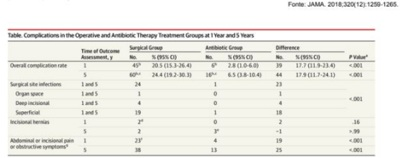
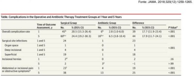
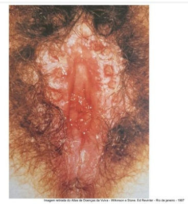
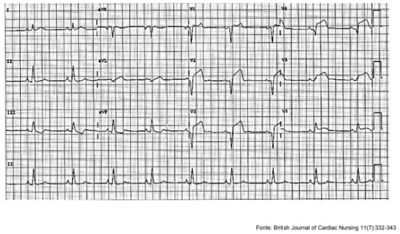
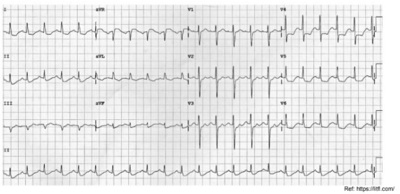
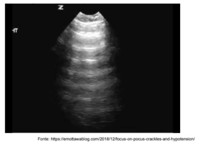
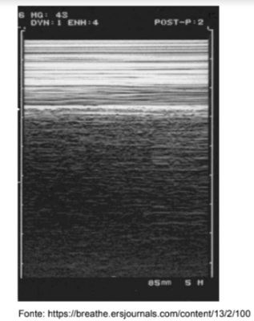
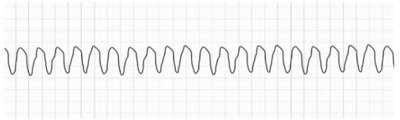
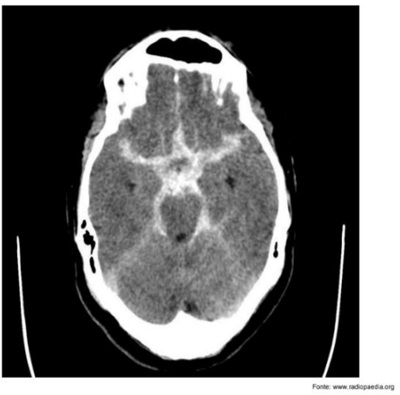

Questão 1 · Quadro Clínico do Linf oma de Hodgkin LH · 4000186159Paciente com 12 anos de idade, apresentando histórico de adenomegalia cervical lateral à direita com crescimento progressivo, evolução de 10 meses, associado a febre, perda de peso e sudorese. Qual a hipótese diagnóstica mais provável?
A Linfoma Burkitt.
B Linfoma Hodgkin.
C Leucemia linfoide aguda.
D Leucemia mieloide aguda.
E Leucemia mieloide crônica.
Questão 2 · Diagnóstico da púrpura trombocitopênica imunológica PTI · Púrpura trombocitopênica imunológica PTI · 4000186158Menino, 3 anos de vida com histórico prévio de IVAS há 15 dias, evoluiu com quadro súbito de petéquias. Hemograma: contagem de plaquetas 6.000/mm³ sem outras alterações. Qual o diagnóstico mais provável?
A Púrpura de Henoch-Schoenlein.
B Púrpura amegacariocítica.
C Púrpura trombocitopênica imunológica.
D Leucemia linfoide aguda.
E Leucemia mieloide aguda.
Questão 3 · Albumina · 4000186157A albumina humana é um composto imunobiológico com ampla utilização na medicina incluindo a faixa etária pediátrica, conforme critérios definidos pela Agência Nacional de Vigilância Sanitária (ANVISA). “Soluções de albumina para uso terapêutico são obtidas a partir do fracionamento industrial do plasma humano ... as empresas que fracionam o plasma preparam as soluções de albumina nas seguintes concentrações: 4%, 5%, 20% e 25%” ANVISA ResoluçãoRDC nº 115, de 10 de maio de 2004; Considerando uma criança com Peso=20Kg com indicação para infusão de Albumina Humana 20% (Frasco contendo 50ml de Albumina) na dose de 1g para cada Kg de peso, qual é a quantidade em mililitros (ml) a ser infundido nesta criança?
A 10ml.
B 25ml.
C 50ml.
D 75ml.
E 100ml.
Questão 4 · Agentes Intravenosos · 4000186156A dipirona monoidratada é um analgésico não narcótico que também apresenta efeito antitérmico e atividade espasmolítica, com uso seguro na faixa etária pediátrica para pacientes acima de 3 meses ou com peso acima de 5Kg. Dentre as apresentações dessa formulação, pode-se encontrar o frasco/ampola (F/a) 500mg/ml (frasco contendo 2ml), utilizado para aplicações endovenosas (EV) ou intramusculares (IM). Considerando uma criança de 4 anos com peso= 25Kg e necessidade de infusão endovenosa (EV) na dose de 10mg/Kg, qual é a quantidade (em mililitros) de medicação a ser aplicada?
A 0,25ml.
B 0,5ml.
C 1,0ml.
D 1,25ml.
E 1,5ml.
Questão 5 · Avaliação inicial do paciente em choque · 4000186155Para diluições medicamentosas em geral, os diluentes mais utilizados contêm soluções injetáveis de glicose a 5% também chamadas de soluções de dextrose 5% (SG 5%). Qual das seguintes opções é a CORRETA para a quantidade de glicose contida nessa apresentação?
A 500mg/ml.
B 50g/10ml.
C 50mg/ml.
D 5mg/ml.
E 5g/ml.
Questão 6 · Tratamento · Diagnóstico · 4000186154Você está na Unidade de Saúde e recebe um lactente, choroso, irritado e com febre. Ao examinálo confirma o diagnóstico de otite média aguda (OMA). Sobre o diagnóstico e manejo do quadro, assinale a alternativa CORRETA.
A Febre alta e otalgia de forte intensidade são indicativos do uso de antibióticos para o tratamento da OMA.
B A complicação mais comum da OMA é a meningite e ocorre especialmente nos casos optados por tratamento expectante.
C Em lactentes a otalgia é rara e deve ser pouco valorizada para o diagnóstico.
D A presença de abaulamento da membrana timpânica tem baixa especificidade para o diagnóstico em lactentes, uma vez que a febre pode acarretar o mesmo sinal clínico.
E O antibiótico de escolha para tratamento da OMA bilateral é a amoxicilina com clavulanato devido à alta resistência do Streptococcus pneumoniae neste sítio de infecção.
Questão 7 · Prevenção Primária · 4000186153Você foi procurado pela mãe de um adolescente que está em iniciação ao tabagismo. Ela tem muitas dúvidas e gosta- ria de receber informações sobre o uso de narguilé e cigarros eletrônico (vaping). Baseado em evidências atuais, assinale a alternativa que mostra a afirmação CORRETA.
A O narguilé ou arguilé é um dispositivo que lembra um cachimbo e a concentração definicotina no fumo utilizado é relativamente baixa em relação ao cigarro comum.
B Os cigarros eletrônicos são dispositivos seguros, uma vez que, mesmo contendo nicotina, não geram dependência aos usuários.
C Os vapings são opções satisfatórias e devem ser encorajados aos adolescentes que pretendem cessar o uso do cigarro comum.
D Diferentemente do visto nas últimas décadas, a influência de amigos e namorado(a) fumante não é fator estimulante ao tabagismo do adolescente.
E Os cigarros mentolados disfarçam o sabor desagradável da combustão do fumo e o mentol interage com a nicotina potencializando seu efeito.
Questão 8 · Comunicação interatrial · 4000186152Paciente de 12 anos vem ao posto de saúde realizar avaliação clínica para liberação para escolinha de futebol. Mãe refere que criança se queixa apenas quando faz atividade física de um pouco de cansaço e coração uso de medicação. Ao exame físico, corado, eupneico, FC= 88 bpm, presença de sopro sistólico ejetivo suave em foco pulmonar ++/VI com P2 desdobrada xa, pulsos presentes e simétricos. Qual o diagnóstico e a conduta mais CORRETA para esse caso?
A Sopro funcional e liberar para atividade.
B Miocardiopatia hipertrófica e solicitar eletrocardiograma.
C Estenose pulmonar e solicitar ecocardiograma.
D CIA e encaminhar para avaliação.
E Febre reumática, solicitar provas de atividade inflamatória.
Questão 9 · Persistência do canal arterial · 4000186151Paciente de 9 meses vem consulta de ambulatório para controle de baixo ganho de peso, queixa de sudorese e cansa- ço para mamar desde o nascimento. Ao exame físico, é acianótica, taquipneica, palidez cutânea +, apresenta sopro contínuo mais audível em região infraclavicular esquerda +++/VI com P2 hiperfonética. Mãe relata que está aguardando consulta com cardiologista desde a alta da maternidade. Assinale a alternativa CORRETA.
A Coarctação de aorta, iniciar prostaglandina.
B Forame oval pérvio com indicação de cirurgia.
C PCA com indicação de fechamento cirúrgico/cateterismo.
D PCA e iniciar ibuprofeno.
E Estenose pulmonar e realizar valvoplastia com cateter.
Questão 10 · Classif icação da desidratação · Plano B · 4000186150Menino, 15 meses, com história de 5 episódios de vômitos há 2 dias e nas últimas 12 horas, a mãe refere 6 episódios de evacuação líquidas volumosas. Exame físico: irritado, choro sem lágrima, boca seca, sedenta por água, sinal da prega desaparece lentamente, pulso rápido. Este paciente deve receber qual plano terapêutico (recomendação OMS e MS)?
A Terapia de reidratação parenteral.
B Terapia de reidratação oral em serviço de saúde.
C Terapia de reidratação oral em ambiente domiciliar.
D Tratamento domiciliar.
E Internamento para hidratação em Unidade de Terapia Intensiva.
Questão 11 · Quadro clínico · Quadro clínico · Aspectos Clínicos Quadro clínico · 4000186149Qual das alternativas descreve CORRETAMENTE a sequência dos diagnósticos clínicos dos casos abaixo? I. _______________: Lactente de 10 meses com história de coriza há 3 dias associado a febre baixa. Evoluiu com edema bipalpebral com secreção purulenta, rash difuso, tipo queimadura com descamação principalmente em axilas, pescoço e ao redor da boca. II. _______________: Adolescente de 13 anos com linfonodomegalia suboccipital, cervical e retro auricular. Hiperemia de orofaringe sem placas e com lesão rósea em palato. Apresentou um rash cutâneo que começou na face, espalhando-se rapidamente pelo pescoço e tronco. O rash teve duração de apenas 1 dia e era pouco pruriginoso. III. _______________: Criança de 5 anos apresenta febre há 5 dias, dor de garganta, adenomegalia cervical dolorosa, exsudato esbranquiçado nas amigdalas. Rash micropapular, hiperemia difusa e pele áspera ao toque. Evolui com edema em torno dos olhos, sem alterações conjuntivais. IV. _______________: Menino de 5 anos, portador de Anemia Falciforme, com febre há 5 dias. Apresenta mancha avermelhada reticular por todo o corpo. Esse rash é mais intenso na face onde observa-se uma palidez perioral.
A I: Síndrome do Choque Tóxico Estreptocócico, II: Mononucleose Infecciosa, III: Escarlatina e IV: Rubéola.
B I: Síndrome do Choque Tóxico Estafilocócico, II: Rubéola, III: Doença de Kawasaki e IV: Eritema Infeccioso.
C I: Síndrome do Choque Tóxico Estreptocócico, II: Rubéola, III: Doença de Kawasaki e IV: Escarlatina.
D I: Síndrome do Choque Tóxico Estafilocócico, II: Mononucleose Infecciosa, III: Doença de Kawasaki e IV: Rubéola.
E I: Síndrome do Choque Tóxico Estafilocócico, II: Rubéola, III: Escarlatina e IV: Eritema Infeccioso.
Questão 12 · Avaliação do Crescimento · Curvas de Crescimento · 4000186148Menino com 10 anos e seis meses consulta com queixa que é o menor entre os seus amigos, sem outras queixas. Mãe refere que, com 9 anos, a estatura era de 128 cm. Pai com 172 cm (percentil 25), mãe com 152 cm (percentil 3). Ao exame, paciente com 133 cm (percentil 10), peso de 33 kg (percentil 75), IMC de 18,8 (percentil 75), exame segmentar sem alterações, genitália com testículos com 1ml 2, sem pelos em região genital. Qual o diagnóstico sindrômico para o caso?
A Baixa estatura real.
B Baixa estatura relativa.
C Obesidade sem estatura elevada.
D Baixa velocidade de crescimento.
E Obesidade com estatura elevada.
Questão 13 · Endoscopia intestinal com biópsia · Erros inatos do metabolismo · 4000186147Analise os casos abaixo e a seguir responda (V) para verdadeiro e (F) para falso quanto aos diagnósticos dados para cada um deles. Caso: 01 ( ) Menino, 15m, é trazido à consulta médica com história de dificuldade para ganhar peso progressiva após os oito meses de vida. A mãe diz que está mais irritado e inapetente, que apresentou aumento das evacuações, com fezes muito fétidas, pálidas, em grande quantidade. Alimentação: leite materno com introdução da dieta da família a partir do sexto mês. Nega infecções recorrentes. Exame físico: irritado, pálido, com peso e altura em queda progressiva na curva de referência. Abdômen: distendido, diminuição de gordura subcutânea e da massa muscular. Biopsia intestinal: relação vilo/cripta 1:1, linfócitos intraepiteliais e infiltrado de linfócitos e plasmócitos em lâmina própria. Caso: 02 ( ) Menino de 2 anos, previamente hígido, iniciou com distensão abdominal progressiva há 15 dias. Nega náuseas e vômitos, mas refere ter aumentado a dor no abdome direito há 3 dias. Ao exame físico, está ativo, em bom estado geral, com mucosas coradas, mas com distensão abdominal importante e massa endurecida localizada no hemiabdome direito com algum desconforto a palpação. Está afebril, sem taquicardia e pressão arterial de 120/90 mmHg. Caso: 03 ( ) Recém-nascido a termo, AIG, sem história de intercorrências perinatais, sorologias normais, Apgar 9/10, iniciou aleitamento materno exclusivo, com boa sucção. Após o quinto dia, observou-se icterícia, hepatomegalia, sucção débil, sinais de sepse e apresentou hipoglicemia. Hemocultura: crescimento de Escherichia coli. O resultado do teste de triagem neonatal foi anormal, sendo sugerido após o diagnóstico avaliação ocular e a utilização de fórmula de partida à base de soja que propiciou uma evolução clínica satisfatória.
A Verdadeiro / Verdadeiro / Verdadeiro.
B Falso / Falso / Verdadeiro.
C Falso / Verdadeiro / Falso.
D Verdadeiro / Falso / Falso.
E Verdadeiro / Falso / Verdadeiro.
Questão 14 · Diagnóstico · Tratamento · Manif estações clínicas · 4000186146Assinale a alternativa CORRETA com relação às Meningites Bacterianas.
A Um recém-nascido de três dias de vida evolui com hipoatividade, vômitos e abaulamento de fontanela anterior. A hipótese diagnóstica foi de Meningite Neonatal. O tratamento preconizado é: Ceftriaxona por 10 dias e Dexametasona de 12 em 12 horas por 4 dias.
B Um menino de 3 anos de idade apresenta febre alta com cefaleia há 12 horas. Vomitou várias vezes e apresentou crise convulsiva tônico clônica generalizada. A análise do LCR mostra: Leucócitos 1200, Hemácias 0,3 com predomínio de linfomononucleares, Glicose de 56mg/dl e Proteína de 12 mg/dl. O diagnóstico é de Meningite Bacteriana e o tratamento é iniciar: Ceftriaxona 12 em 12 horas com Dexametasona de 12 em 12 horas por 2 dias.
C Um recém-nascido de sete dias de vida evolui com hipoatividade, vômitos e abaulamento de fontanela anterior. Ao realizar Ecografia transfontanela, observam-se calcificações periventriculares. O tratamento deverá ser com Ganciclovir de 12 em 12 horas por seis semanas.
D Uma criança de 10 anos apresenta petéquias em face e tórax superior. Seu estado geral é bom e o LCR está normal. A hipótese diagnóstica é de Meningococcemia e o tratamento deverá ser com Ceftriaxona de 12 em 12 horas por 7 dias.
E Uma criança de 4 anos apresenta marcha atáxica e confusão mental. Realizou uma Tomografia de Crânio com laudo normal. LCR mostra: Leucócitos 60, Hemácias 0,3 com predomínio de linfomononucleares, Glicose de 56mg/dl e Proteína de 112 mg/dl. O tratamento deverá ser com Imunoglobulina ou Pulsoterapia.
Questão 15 · Diagnóstico e investigação adicional · 4000186145Em relação ao diagnóstico laboratorial do hipertireoidismo, espera-se encontrar, além do TSH baixo e T4 livre e T3 altos, os seguintes resultados nos exames laboratoriais:
A anti-peroxidase e anti-tireoglobulina positivos, TRAb negativo.
B anti-peroxidase e anti-tireoglobulina negativos, TRAb negativo.
C anti-peroxidase e anti-tireoglobulina negativos, TRAb positivo.
D anti-peroxidase positivo e anti-tireoglobulina negativos, TRAb positivo.
E anti-peroxidase e anti-tireoglobulina positivos, TRAb positivo.
Questão 16 · Programa Nacional de Imunizações · Calendário inf antil · 4000186144O calendário vacinal do Programa Nacional de Imunizações do Brasil vem, a cada ano, contemplando novas vacinas e adequando as doses de acordo com o per l epidemiológico atual. Com base nas recomendações de 2021, considere as seguintes a rmativas: 1. A vacina Pentavalente celular é constituída pelos seguintes componentes: DTp + HIB + VIP. 2. A segunda dose da vacina do rotavírus pode ser realizada até 7 meses e 29 dias. 3. A vacina pneumocócica 10 valente é realizada em esquema de 3 doses: aos 2, 4, 6 e reforço de 12 a 15 meses. 4. O esquema da vacina para pólio atenuada é feito aos 2, 4 e 6 meses e pólio inativada com 15 meses e 4 a 6 anos de idade, além das campanhas. Assinale a alternativa CORRETA.
A Somente as afirmativas 1 e 4 são verdadeiras.
B Somente as afirmativas 1, 2 e 4 são verdadeiras.
C Somente a afirmativa 1 é verdadeira.
D Somente a afirmativa 2 é verdadeira.
E Somente a afirmativa 4 é verdadeira.
Questão 17 · Filhos de mães com hepatite B · 4000186143A transmissão materno infantil da hepatite B ocorre predominantemente durante a passagem do RN no canal de parto, pelo contato com sangue materno, secreção vaginal e raramente no período intrauterino. No caso de um recém-nascido de mãe portadora de vírus da hepatite B (AgHbs+) que apresenta peso de nascimento de 1900 g, que medidas pro láticas estariam indicadas?
A Vacina anti-hepatite B nas primeiras 12 h de vida IM + orientar realização de 2 doses posteriores da vacina (2, 4 e 6 meses junto com a Pentavalente - IM).
B Gamaglobulina hiperimune contra hepatite B IM + vacina anti-hepatite B nas primeiras 12 h de vida IM + orientar realização de 3 doses posteriores da vacina (2, 4 e 6 meses junto com a Pentavalente – IM).
C Gamaglobulina hiperimune contra hepatite B EV + vacina anti-hepatite B nas primeiras 12 h de vida IM + orientar realização de 3 doses posteriores da vacina (2, 4 e 6 meses junto com a Pentavalente - IM).
D Aguardar o RN completar 2000 g para iniciar a Imunoglobulina e realizar a vacinação imediatamente após o nascimento.
E Aguardar o RN completar 2000 g para iniciar a vacinação e realizar a imunoglobulina imediatamente após o nascimento.
Questão 18 · Características da Dor · Enxaqueca · Classif icação · 4000186142Adolescente, sexo feminino, é frequentemente levada à emergência por episódios de cefaleia, diplopia, ataxia e alteração visual. Realizou eletroencefalograma e ressonância magnética de crânio que não evidenciaram alterações. Qual é o diagnóstico?
A Enxaqueca basilar.
B Cefaleia hípnica.
C Cefaleia em salvas.
D Enxaqueca hemiplégica.
E Cefaleia Cervicogênica.
Questão 19 · Vitamina B6Piridoxina · 4000186141Criança de 2 anos, com diagnóstico de autismo, apresenta seletividade alimentar importante, consumindo apenas leite in natura, ovos, alimentos à base de carboidratos e alimentos ultraprocessados. Não consome frutas, verduras, legumes e carnes. Ao exame físico, detecta-se dé cit de crescimento, sinais de desnutrição proteica, queilite, glossite, anemia e dermatite. Na avaliação laboratorial, além de ferropenia, espera-se encontrar deficiência de
A Vitamina D.
B Vitamina C.
C Zinco.
D Vitamina E.
E Vitamina B6.
Questão 20 · Investigação de Surtos · Epidemias progressivas ou propagadas · 4000186140“O Ministério da Saúde por meio da Sala de Situação, instalada em 23 de maio, monitora as noti cações de casos de Monkeypox no mundo e, no Brasil, além do monitoramento também é realizada a investigação dos casos, assim como a elaboração de documentos técnicos para fomentar ações públicas”. www.gov.br/saude. Segundo a nota técnica elaborada pelo Ministério da Saúde para orientação das equipes da Atenção Primária à Saúde (APS), é CORRETO afirmar:
A Idosos com comorbidades como hipertensão arterial sistêmica e diabetes tipo 2 são considerados grupo de risco.
B O monitoramento dos casos suspeitos deve ser realizado em domicílio e presencialmente pela equipe da APS.
C Os contatos assintomáticos de pacientes suspeitos ou confirmados tem necessidade de isolamento.
D O swab do material vesicular dos casos suspeitos deve ser coletado em duas ou mais amostras de locais distintos.
E Para definição de caso suspeito, é necessário ter vínculo epidemiológico com casos suspeitos, prováveis ou confirmados de Monkeypox.
Questão 21 · Princípios e Diretrizes do SUS na Lei n 80801990 · 4000186139A Lei complementar 141/2012 regulamentou o § 3o do art. 198 da Constituição Federal para dispor sobre os valores mínimos a serem aplicados anualmente pela União, Estados, Distrito Federal e Municípios em ações e serviços públicos de saúde; estabeleceu os critérios de rateio dos recursos de transferências para a saúde e as normas de scalização, avaliação e controle das despesas com saúde nas 3 (três) esferas de governo; revogou dispositivos das leis nos 8.080, de 19 de setembro de 1990, e 8.689, de 27 de julho de 1993; e deu outras providências. Considerando essa Lei, assinale a alternativa que NÃO corresponde a ações e serviços públicos de saúde (ASPS).
A Vigilância em saúde, incluindo epidemiológica e sanitária.
B Remuneração do pessoal ativo na área da saúde.
C Ações da assistência social.
D Manejo ambiental vinculado a vetores de doenças.
E Capacitação do pessoal do Sistema Único de Saúde.
Questão 22 · Política Nacional de Práticas Integrativas e Complementares · Política Nacional de Atenção Básica PNAB · 4000186138Luana é diabética há 3 anos. Toma medicações que tem controlado parcialmente a doença. Na última consulta na Unidade de Saúde próxima de sua casa, o enfermeiro reorientou sua dieta e pediu apoio do nutricionista do NASF. Esta ação desempenhada pelo enfermeiro caracteriza qual nível de prevenção?
A Secundária.
B Terciária.
C Primária.
D Quaternária.
E Primordial.
Questão 23 · Política Nacional de Humanização · 4000186137Sr. Joel é morador do bairro Passaúna há muitos anos e frequenta a unidade de saúde local. Recentemente, procurou atendimento na unidade recém reformada. Ao chegar, notou cadeiras mais confortáveis na recepção, as paredes tinham uma cor suave que lhe gerou sensação de tranquilidade. E, além disso, percebeu a recepção localizada num ponto mais estratégico, longe de onde as pessoas cam sentadas e com biombos laterais para proteção do usuário no momento de trazer sua demanda. A situação descrita acima é um exemplo de observância do seguinte dispositivo da Política Nacional de Humanização (PNH):
A Ambiência.
B Acolhimento.
C Gestão Participativa.
D Clínica Ampliada.
E Projeto Terapêutico singular.
Questão 24 · Princípios e Diretrizes do SUS a serem operacionalizados pela Atenção Básica · 4000186136Princípios e Diretrizes do SUS na Lei n 80801990 Um jovem de 24 anos residente no bairro do Portão jamais havia entrado numa Unidade Básica de Saúde (UBS). Certo dia, enquanto trabalhava, começou a sentir-se mal com dor abdominal, diarréia e vômito e decidiu ir à UBS. Chegou na recepção às 10h, a funcionária sorriu, cumprimentou-o com um “bom dia” e começou o atendimento. Avaliou que ele estava se sentindo muito mal e imediatamente colocou-o na agenda para consulta médica. João Paulo, um senhor usuário da UBS de longa data, havia ido solicitar consulta apenas para renovar a prescrição dos seus anti-hipertensivos e foi agendado para dali 3 dias, pois já não havia mais disponibilidade de consultas. Qual o princípio do Sistema Único de Saúde contemplado pela situação?
A Integralidade.
B Universalidade.
C Hierarquização.
D Descentralização.
E Equidade.
Questão 25 · Curva ROC · 4000186135Em 2021 foi divulgada a nova diretriz brasileira para tratamento da síndrome coronariana aguda sem supra de ST. Nessa diretriz foi posto que o escore HEART deve ser o utilizado na estrati cação desses pacientes. Em 2016 Poldervaart et al havia publicado um estudo que comparou a performance de três escores distintos (HEART, GRACE e TIMI) por meio de uma curva ROC, o resultado desse estudo está exposto na figura abaixo: Sobre a interpretação dessa imagem, assinale a alternativa CORRETA.

A O escore HEART apresenta uma sensibilidade de 88%, sendo o melhor para confirmação diagnóstica.
B O Escore TIMI é o que apresenta a melhor performance quando o paciente apresenta uma baixa probabilidade pré-teste.
C Os três escores apresentam níveis de sensibilidade e especificidades similares, uma vez que todas as curvas iniciam e terminam no mesmo ponto.
D O escore GRACE apresentou a pior performance, uma vez que sua área sob a curva é a menor entre os 3.
E O escore TIMI é o que apresenta melhor acurácia, uma vez que apresenta o melhor equilíbrio entre sensibilidade e especificidade.
Questão 26 · Epidemias progressivas ou propagadas · 4000186134Durante o ano de 2022, tivemos uma nova pandemia, agora de Varíola do Macaco (Monkeypox), sobre essa condição, assinale a alternativa CORRETA.
A A doença é uma zoonose, sendo transmitida principalmente de primatas para o ser humano.
B Essa doença era considerada erradicada no mundo há vários anos, porém devido à baixa cobertura vacinal, casos novos passaram a ser detectados nesse ano.
C A principal via de transmissão é a sexual, sendo que o maior grupo de risco, no momento, é o de homens que fazem sexo com outros homens.
D Apesar de ser uma variante da varíola humana clássica, a vacina existente não produz imunidade.
E Apesar de ser considerada uma pandemia, a doença ainda está localizada ao continente africano e asiático, com raros casos na Europa e nas Américas.
Questão 27 · Ensaios clínicos · 4000186133No ano de 2015 foi publicado o estudo APPAC que comparou o tratamento cirúrgico contra o uso de antibióticos na apendicite não complicada. O resultado do acompanhamento dos pacientes por mais 5 anos foi publicado em 2018. O estudo foi desenhado da seguinte forma: 530 pacientes com idade entre 18 e 60 anos, com apendicite confirmada, foram randomizados para receber tratamento cirúrgico por meio de apendicectomia ou então terapia antimicrobiana isolada. Os pacientes foram então analisados por 5 anos, tendo como desfechos a recorrência, a taxa de complicações e o tempo de hospitalização. O resultado do estudo está na tabela abaixo: Como esse estudo pode ser classificado?

A Coorte.
B Caso-Controle.
C Estudo Transversal.
D Estudo Ecológico.
E Ensaio Clínico.
Questão 28 · Ensaios clínicos · Posição do observador observacional x experimental · 4000186132No ano de 2015 foi publicado o estudo APPAC que comparou o tratamento cirúrgico contra o uso de antibióticos na apendicite não complicada. O resultado do acompanhamento dos pacientes por mais 5 anos foi publicado em 2018. O estudo foi desenhado da seguinte forma: 530 pacientes com idade entre 18 e 60 anos, com apendicite confirmada, foram randomizados para receber tratamento cirúrgico por meio de apendicectomia ou então terapia antimicrobiana isolada. Os pacientes foram então analisados por 5 anos, tendo como desfechos a recorrência, a taxa de complicações e o tempo de hospitalização. O resultado do estudo está na tabela abaixo: Sobre o resultado do estudo, assinale a alternativa CORRETA.

A O grupo submetido a tratamento clínico apresentou uma incidência menor de complicações do que o grupo submetido ao tratamento cirúrgico, com significância estatística.
B O grupo submetido a tratamento clínico apresentou uma incidência maior de dor abdominal do que o grupo submetido ao tratamento cirúrgico, com significância estatística.
C O grupo submetido a tratamento clínico apresentou uma incidência menor de complicações do que o grupo submetido ao tratamento cirúrgico, porém sem significância estatística.
D O grupo submetido a tratamento clínico apresentou uma incidência menor de hérnia incisional do que o grupo submetido ao tratamento cirúrgico, com significância estatística.
E O grupo submetido a tratamento clínico apresentou uma incidência maior de sintomas obstrutivos do que o grupo submetido ao tratamento cirúrgico, com significância estatística.
Questão 29 · Calendário vacinal do idoso · Calendário vacinal em adultos e idosos · 4000186131Sobre o calendário vacinal do Adulto, assinale a alternativa CORRETA.
A A vacinação para Difteria e Tétano só é recomendada até os 45 anos, sendo indicado um reforço a cada 5 anos.
B A vacina antipneumocócica 23-valente é recomendada para pacientes com 60 anos ou mais que estejam acamados ou institucionalizados.
C A vacina contra a febre amarela é indicada para pessoas de até 59 anos de idade, sendo recomendada uma dose de reforço a cada 10 anos.
D A vacina contra Sarampo, Caxumba e Rubéola é indicada para pacientes com mais de 60 anos, sendo aplicada em 2 doses com intervalo mínimo de 30 dias entre elas.
E A vacina contra a hepatite B é recomendada até os 49 anos, devendo ser aplicada com 4 doses, com intervalo de 2 meses entre elas.
Questão 30 · Estratif icação do risco cardiovascular em pacientes em uso de estatinas · Estatinas · 4000186130Paciente de 62 anos com histórico de Infarto Agudo do Miocárdio há 3 anos, tabagista ativo (carga tabágica de 30 anos- maço), refere ser portador de hipertensão, diabetes e possuir crises de gota frequentes, procura atendimento na sua Unidade Básica de Saúde pois necessita um atestado médico para realizar exercício físico. No momento o paciente encontra-se assintomático e refere que trabalha pesado todos os dias, realizando corte de grama e serviços de marcenaria, sem apresentar dispneia ou dor torácica. Está fazendo uso de Enalapril 20 mg a cada 12 horas, Atenolol 50mg ao dia, Sinvastatina 40mg ao dia, Metformina 1 grama a cada 12 horas e AAS 100mg na hora do almoço. Quando questionado sobre o tabagismo ele refere que não deseja parar de fumar pois seus tios todos fumam desde a infância e estão vivos com mais de 80 anos, então ele não acredita nos males do tabagismo. Ao exame físico encontra-se em bom estado geral, com uma pressão arterial de 156x96 mmHg, Frequência cardíaca de 60 bpm e frequência respiratória de 14 ipm. Você solicita exames laboratoriais que revelam: LDL 84 mg/dL; HDL 32 mg/dL; Triglicerídeos 302 mg/dL Hemoglobina Glicada: 7,9% Glicemia de Jejum: 134 mg/dL Ácido Úrico: 8,2 mg/dL Hemograma, função renal, marcadores de lesão hepática e TSH estão normais. Qual a sua conduta frente à dislipidemia do paciente?
A Associar um fibrato à sinvastatina.
B Manter a dose atual de sinvastatina reforçar medidas de estilo de vida.
C Aumentar dose de sinvastatina para 80mg ao dia.
D Associar Omega 3 à sinvastatina.
E Trocar a sinvastatina por atorvastatina em alta dose.
Questão 31 · Política Nacional de Promoção de Saúde · Bloqueadores dos canais de cálcio BCC · 4000186129Paciente de 62 anos com histórico de Infarto Agudo do Miocárdio há 3 anos, tabagista ativo (carga tabágica de 30 anos- maço), refere ser portador de hipertensão, diabetes e possuir crises de gota frequentes, procura atendimento na sua Unidade Básica de Saúde pois necessita um atestado médico para realizar exercício físico. No momento o paciente encontra-se assintomático e refere que trabalha pesado todos os dias, realizando corte de grama e serviços de marcenaria, sem apresentar dispneia ou dor torácica. Está fazendo uso de Enalapril 20 mg a cada 12 horas, Atenolol 50mg ao dia, Sinvastatina 40mg ao dia, Metformina 1 grama a cada 12 horas e AAS 100mg na hora do almoço. Quando questionado sobre o tabagismo ele refere que não deseja parar de fumar pois seus tios todos fumam desde a infância e estão vivos com mais de 80 anos, então ele não acredita nos males do tabagismo. Ao exame físico encontra-se em bom estado geral, com uma pressão arterial de 156x96 mmHg, Frequência cardíaca de 60 bpm e frequência respiratória de 14 ipm. Você solicita exames laboratoriais que revelam: LDL 84 mg/dL; HDL 32 mg/dL; Triglicerídeos 302 mg/dL Hemoglobina Glicada: 7,9% Glicemia de Jejum: 134 mg/dL Ácido Úrico: 8,2 mg/dL Hemograma, função renal, marcadores de lesão hepática e TSH estão normais. Qual a sua conduta para o manejo da Hipertensão do paciente?
A Associar Hidroclorotiazida.
B Suspender Atenolol e associar Hidroclorotiazida.
C Associar Anlodipino.
D Aumentar a dose do Atenolol para 50mg a cada 12 horas.
E Associar espironolactona na dose de 25mg ao dia.
Questão 32 · Política Nacional de Promoção de Saúde · 4000186128Paciente de 62 anos com histórico de Infarto Agudo do Miocárdio há 3 anos, tabagista ativo (carga tabágica de 30 anos- maço), refere ser portador de hipertensão, diabetes e possuir crises de gota frequentes, procura atendimento na sua Unidade Básica de Saúde pois necessita um atestado médico para realizar exercício físico. No momento o paciente encontra-se assintomático e refere que trabalha pesado todos os dias, realizando corte de grama e serviços de marcenaria, sem apresentar dispneia ou dor torácica. Está fazendo uso de Enalapril 20 mg a cada 12 horas, Atenolol 50mg ao dia, Sinvastatina 40mg ao dia, Metformina 1 grama a cada 12 horas e AAS 100mg na hora do almoço. Quando questionado sobre o tabagismo ele refere que não deseja parar de fumar pois seus tios todos fumam desde a infância e estão vivos com mais de 80 anos, então ele não acredita nos males do tabagismo. Ao exame físico encontra-se em bom estado geral, com uma pressão arterial de 156x96 mmHg, Frequência cardíaca de 60 bpm e frequência respiratória de 14 ipm. Você solicita exames laboratoriais que revelam: LDL 84 mg/dL; HDL 32 mg/dL; Triglicerídeos 302 mg/dL Hemoglobina Glicada: 7,9% Glicemia de Jejum: 134 mg/dL Ácido Úrico: 8,2 mg/dL Hemograma, função renal, marcadores de lesão hepática e TSH estão normais. Quanto à solicitação de atestado para realização de atividade física, você orienta que
A como o paciente possui histórico de infarto do miocárdio, a realização de atividade física é proscrita.
B o paciente precisa realizar um teste ergométrico antes de iniciar a prática de atividade física de leve a moderada intensidade.
C o paciente pode realizar exercício físico, mas antes precisa atingir controle dos níveis séricos de glicose, devido ao risco de hiperglicemia relacionada ao exercício.
D não existe contraindicação no momento para realização de atividade física de leve e moderada intensidade.
E o paciente precisa realizar um ecocardiograma antes de iniciar a prática de exercício físico de leve a moderada intensidade.
Questão 33 · Política Nacional de Promoção de Saúde · Cessação do tabagismo · 4000186127Paciente de 62 anos com histórico de Infarto Agudo do Miocárdio há 3 anos, tabagista ativo (carga tabágica de 30 anos- maço), refere ser portador de hipertensão, diabetes e possuir crises de gota frequentes, procura atendimento na sua Unidade Básica de Saúde pois necessita um atestado médico para realizar exercício físico. No momento o paciente encontra-se assintomático e refere que trabalha pesado todos os dias, realizando corte de grama e serviços de marcenaria, sem apresentar dispneia ou dor torácica. Está fazendo uso de Enalapril 20 mg a cada 12 horas, Atenolol 50mg ao dia, Sinvastatina 40mg ao dia, Metformina 1 grama a cada 12 horas e AAS 100mg na hora do almoço. Quando questionado sobre o tabagismo ele refere que não deseja parar de fumar pois seus tios todos fumam desde a infância e estão vivos com mais de 80 anos, então ele não acredita nos males do tabagismo. Ao exame físico encontra-se em bom estado geral, com uma pressão arterial de 156x96 mmHg, Frequência cardíaca de 60 bpm e frequência respiratória de 14 ipm. Você solicita exames laboratoriais que revelam: LDL 84 mg/dL; HDL 32 mg/dL; Triglicerídeos 302 mg/dL Hemoglobina Glicada: 7,9% Glicemia de Jejum: 134 mg/dL Ácido Úrico: 8,2 mg/dL Hemograma, função renal, marcadores de lesão hepática e TSH estão normais. Qual deve ser a abordagem quanto ao tabagismo do paciente?
A O paciente encontra-se em fase de pré-contemplação, devendo receber orientação sobre os benefícios da interrupção do tabagismo e ser estimulado a pensar no assunto.
B O paciente encontra-se em fase de contemplação e deve ser iniciado tratamento com bupropiona até que tenha desejo em parar de fumar.
C O paciente encontra-se em fase de pré-contemplação e como nega os males do tabagismo, esse assunto não deve mais ser abordado em consulta pelo risco de quebra da relação médico-paciente.
D O paciente encontra-se em fase de negação e nenhuma estratégia será efetiva, portanto o assunto não deve mais ser abordado em consulta pelo risco de quebra da relação médico-paciente
E O paciente encontra-se em fase de negação, porém deve ser orientado e prescrito medicamentos para substituição definicotina, como os adesivos.
Questão 34 · Declaração de óbito DO Atestado de óbito · 4000186126Um paciente de 72 anos, portador de hipotireoidismo, foi admitido no pronto atendimento do Hospital Universitário Cajuru com um quadro de AVE extenso cursando com rebaixamento do nível de consciência. Após 1 mês internado, apresentou um quadro de tromboembolismo pulmonar, enquanto recebia o seu tratamento com drogas anticoagulantes evoluiu com quadro súbito de hemorragia digestiva alta e evoluiu com parada cardiorrespiratória refratária mesmo após 40 minutos de manobras de ressuscitação, sendo constatado óbito. Considerando a Declaração de Óbito como a principal fonte de dados para o Sistema de Informação de Mortalidade, assinale a alternativa que contém o preenchimento CORRETO da parte I. das causas da morte, considerando de cima para baixo.

A Parada Cardiorrespiratória – Hemorragia Digestiva Alta – Trombo Embolismo Pulmonar – Acidente Vascular Encefálico.
B Parada Cardiorrespiratória – Trombo Embolismo Pulmonar – Hemorragia Digestiva Alta – Acidente Vascular Encefálico.
C Acidente Vascular Encefálico – Hipotireoidismo – Hemorragia Digestiva Alta.
D Hipotireoidismo – Acidente Vascular Encefálico – Tromboembolismo Pulmonar – Hemorragia Digestiva Alta.
E Hemorragia Digestiva Alta – Trombo Embolismo Pulmonar – Acidente Vascular Encefálico.
Questão 35 · Princípios e Diretrizes do SUS a serem operacionalizados pela Atenção Básica · 4000186125Mariana está trabalhando na Unidade de Pronto Atendimento (UPA) de sua cidade e atende a Joaquim, um senhor de 75 anos que é diabético de longa data. O paciente veio à UPA, pois mediu sua glicemia em casa e estava 350mg/dl. Ele faz uso de metformina 850mg 3cp ao dia, AAS 100mg ao dia, enalapril 40mg ao dia e sinvastatina 20mg à noite. Ele está assintomático. Há meses não comparece à sua Unidade de Saúde (US) e não faz exames de rotina, pois prefere buscar diretamente a UPA. Ele nega internamentos prévios. No momento está com exame físico normal e sua glicemia está 420mg/dl. Sobre as condutas a serem tomadas e os fluxos no Sistema Único de Saúde, assinale a alternativa CORRETA.
A Mariana deverá prescrever insulina NPH 10UI à noite, fazer o controle de dextros e reavaliar o paciente diariamente até ajuste.
B Além da insulina no momento, Mariana deve solicitar os exames de rotina e encaminhar o paciente ao endocrinologista.
C Seu Joaquim deve ser encaminhado à sua Unidade de Saúde, na qual o tratamento com dapagliflozina poderá ser prescrito via farmácia estadual para este caso.
D Seu Joaquim deve receber insulina no momento e deve ser referenciado para sua US para exames e ajuste de insulina.
E Seu Joaquim não deveria ser atendido na UPA sem encaminhamento, já que a US é a ordenadora do sistema de saúde.
Questão 36 · Program Saúde da Família PSF e Estratégia Saúde da Família ESF · 4000186124Pedro é médico há anos em uma equipe de Estratégia de Saúde da Família de um município no Paraná. Considerando o programa Previne Brasil, qual dos atendimentos realizados por Pedro no ano de 2022 seria considerado como indicador de desempenho necessário para que o município no qual Pedro atua receba mais recursos para a Atenção Primária?
A Atendimento de João de 20 anos, que vem para exames de rotina, e solicita sorologia para HIV.
B Atendimento de Joana de 56 anos, é solicitada mamografia de rotina.
C Consulta de Mariana, gestante de 27 anos, é solicitada sorologia para sífilis e HIV.
D Consulta de Mario, hipertenso e diabético, realizada glicemia de jejum semestralmente.
E Consulta de Jonas de 55 anos, realizado PSA anualmente.
Questão 37 · Abordagem Comunitária · 4000186123Uma Equipe de Estratégia de Saúde da Família (ESF) é composta pelo médico Pedro, pelo enfermeiro Luiz, pela técnica de enfermagem Juliana e pela Agente de Comunitária de Saúde (ACS) Cristiane. Ao considerarmos a Política Nacional de Atenção Básica de 2017 (PNAB de 2017), quais são as atribuições desta equipe e de seus profissionais?
A Juliana deverá cumprir 20 horas semanais e não é sua atribuição participar do processo de territorialização e mapeamento da área de atuação da equipe.
B Luiz deverá cumprir 40 horas semanais e deverá supervisionar as ações de Juliana e Cristiane.
C Pedro poderá cumprir 20 horas semanais e deverá supervisionar as ações do técnico/auxiliar de enfermagem e ACS.
D Cristiane deverá cumprir pelo menos 30 horas semanais e é a profissional responsável por cadastramento dos usuários e territorialização.
E Pedro deverá cumprir 40 horas semanais e não é sua atribuição participar do processo de territorialização e mapeamento da área de atuação da equipe.
Questão 38 · Declaração de óbito DO Atestado de óbito · 4000186122Luís está atendendo na Unidade de Saúde de sua cidade e é chamado para emitir uma declaração de óbito (DO) de um paciente que faleceu em casa e que seu colega Mário acompanhava já em cuidados paliativos. Luís verifica o prontuário no qual estava descrito que o paciente acompanhava por Insu ciência Cardíaca decorrente de um Infarto há 5 anos. Sobre a emissão desta declaração, é CORRETO afirmar:
A Como se tratava de um paciente de outro médico, Luís está impedido de emitir a DO, devendo encaminhar o corpo ao Instituto Médico Legal.
B Luís pode preencher a DO desde que assinale no item ‘Recebeu assistência médica durante a doença que ocasionou a morte?’: NÃO.
C Se Luís verificar sinais de violência, deverá preencher a DO como causa externa.
D Luís deverá realizar visita domiciliar, verificar o óbito e deverá assinar a DO como médico substituto.
E Luís deverá preencher a DO colocando todos os números dos CIDs pelos quais o paciente era acompanhado.
Questão 39 · Tratamento · 4000186121Maria Eduarda, de 30 anos, é casada com Leandro de 32 anos. Eles têm um lho chamado Mateus, de 4 anos, e uma lha chamada Luana, de 2 anos. Na sua casa também moram seu cunhado Carlos, de 40 anos, que convive com HIV e sua mãe Rita, de 52 anos, que é diabética. Maria Eduarda buscou a Unidade de Saúde, pois está com tosse produtiva há 2 meses, além de emagrecimento. A médica então faz o diagnóstico de tuberculose através de baciloscopia positiva e inicia o tratamento. Além disso, em relação à infecção Latente pelo Mycobacterium tuberculosis (ILTB), considerando que os contatos domiciliares de Maria Eduarda estão assintomáticos, a médica precisa
A solicitar a Leandro um BAAR e radiografia de tórax.
B iniciar tratamento ILTB para Luana independente de exames complementares.
C solicitar a Mateus Prova tuberculínica (PT) e caso esteja <5mm não há necessidade de investigação complementar.
D solicitar a Rita que realize BAAR e radiografia de tórax.
E iniciar tratamento de ILTB para Carlos, independentemente de seu CD4.
Questão 40 · Diagnóstico · Tratamento · Classif icação · 4000186120Você está de plantão na UPA do Campo Comprido e atende uma paciente chorando com queixa de dor vaginal. Ela tem 17 anos e iniciou atividade sexual homoafetiva há 2 anos e faz uso de condon irregularmente. A data da última menstruação foi há 2 dias e a dor piorou na menstruação. Tem queixa de disúria e di culdade de urinar em virtude da dor. Você examina a paciente e o exame físico é condizente com a figura abaixo; e você não consegue fazer o exame especular em virtude da dor. Qual o tratamento e as orientações gerais que você dá para a paciente do caso descrito, segundo o protocolo atual do Ministério da Saúde?

A Aciclovir 400mg, via oral, 3 vezes ao dia por 7 a 10 dias. Você contribui para que a pessoa reconheça e minimize o próprio risco de infecção.
B Penicilina Benzatina 2,4 milhões de UI intra muscular, dose única. Realiza orientação centrada na pessoa e suas práticas sexuais.
C Doxiciclina 100mg via oral de 12 em 12 horas por 14 dias. Oferece tipagem de HIV, Sífilis e Hepatites B e C.
D Penicilina Benzatina 2,4 milhões de UI intra muscular em dose única. Você notifica o caso.
E Aciclovir tópico. Oferece vacinação para Hepatites A e B.
Questão 41 · HPV · Indicações · 4000186119Sua amiga de 18 anos deseja fazer a vacina para HPV. Ela tem vida sexual ativa e sua ginecologista contra indicou a vacina em virtude dela ter começado a vida sexual. Você orienta sua amiga que pelo protocolo do Ministério da Saúde:
A A vacina é quadrivalente e está indicada para meninas e meninos dos 11 aos 21 anos de idade.
B A vacina é bivalente e está indicada em mulheres até os 45 anos de idade.
C A vacina é quadrivalente está indicada em meninas de 9 a 14 anos de idade.
D A vacina é bivalente e não pode ser aplicada em pacientes que tenham iniciado a vida sexual.
E A vacina é quadrivalente e pode ser aplicada em qualquer faixa etária desde que a pessoa não tenha iniciado a vida sexual.
Questão 42 · Conservador · Diagnóstico · Classif icação · 4000186118Você está de plantão em um Hospital em Colombo e é chamado(a) para atender uma paciente de 80 anos, cardiopata grave, obesa, com queixa de sangramento genital, "bola" na vagina e di culdade para urinar, em alguns dias, não consegue urinar. Você faz diagnóstico de insu ciência renal aguda e ao examiná-la você identi ca a seguinte quanti cação do prolapso genital: POP-Q Pontos: Aa= +3 Ba=+6 C= +6; gh= 6 pb= 3 CVT= 6; Ap= +3 Bp= +6 D= +6; Você identi ca ainda que o sangramento vaginal é do prolapso genital. Qual a conduta você indica para a paciente?
A Sondagem vesical e cirurgia para correção do prolapso pela via abdominal.
B Sondagem vesical e uso de Pessário vaginal.
C Sondagem vesical e fisioterapia do assoalho pélvico.
D Interna a paciente e indica Cirurgia de Colpoperineoplastia anterior e posterior.
E Interna a paciente e indica Cirurgia de sling sintético.
Revisar: possível letra faltando em enunciado
Questão 43 · Ultrassonograf ia · Quadro Clínico · Histeroscopia · 4000186117Paciente de 40 anos chega à consulta ginecológica com queixa de aumento do uxo menstrual, fez uso de ácido tranexâmico e cetoprofeno sem melhora e usa sulfato ferroso para tratamento de anemia. Ela é Gesta 2 com 2 Cesáreas e tem desejo de ter mais um lho. Relata ser hipertensa e estar em uso de Losartana. A Ultrassonogra a da paciente mostra útero em AVF com volume de 180cc às custas de mioma no terço inferior do útero, de classificação Tipo 1 da FIGO que tem seu maior diâmetro de 3cm, revela ainda que ambos os ovários micropolicísticos com volume de 10cc. Qual a conduta mais adequada para a paciente?
A Miomectomia abdominal.
B Histerectomia.
C Expectante.
D Miomectomia por histeroscopia.
E Anticoncepcional oral contendo Etinilestradiol e Drosperinona.
Questão 44 · Def inição e mecanismo de ação · 4000186116Os contraceptivos hormonais orais, além da contracepção, possuem outros benefícios para a saúde. Dentre esses benefícios, pode-se destacar a proteção contra cistos funcionais do ovário. Marque a alternativa que contém outro benefício para a saúde feminina.
A Redução dos níveis de pressão arterial.
B Redução dos níveis de triglicerídeos pelo estrogênio.
C Redução dos níveis de glicemia pelo progestágeno.
D Redução do risco de eventos trombóticos.
E Redução acentuada e duradoura do risco de câncer de endométrio e ovário.
Questão 45 · Terapia hormonal da menopausa · Indicações · Contraindicações · 4000186115Os sintomas vasomotores podem afetar até 75% das mulheres na perimenopausa e são um fator importante de piora da qualidade de vida das pacientes nesse período. Você atende uma paciente de 47 anos, com sintomas vasomotores, desânimo, humor depressivo e perda de energia. Ela tem ciclos irregulares, prole definida e vida sexual ausente há 5 anos. Ela faz exercícios físicos, não tem vícios, é ativa e trabalha como médica hospitalista em um hospital universitário. A paciente não tem contraindicação para terapia hormonal e deseja tratar os sintomas, que no momento estão atrapalhando sua performance. Qual medicamento é o mais adequado para essa paciente?
A 17 beta Estradiol + Didrogesterona.
B Etinilestradiol + Levonorgestrel.
C Etinilestradiol + Drosperinona contínuo.
D Estradiol transdérmico.
E Estradiol vaginal.
Questão 46 · Citologia convencional · Lesão intraepitelial escamosa de baixo grau · 4000186114Nomenclatura citológica brasileira Paciente de 25 anos, iniciou vida sexual há 2 anos, vem à consulta de retorno para mostrar resultado de sua primeira Citologoia Oncótica Cérvico Vaginal. Ela é hígida, nunca engravidou e usa contraceptivo hormonal oral e condon como métodos contraceptivos e fez a vacinação completa para HPV. O resultado mostra Lesão Intraepitelial de Baixo Grau. Baseado no protocolo de rastreamento do Ministério da Saúde, qual é a conduta correta para essa paciente?
A Realizar Teste DNA-HPV.
B Colposcopia.
C Repetir Citologia Oncótica em 1 ano.
D Repetir Citologia Oncótica em 6 meses.
E Expectante.
Questão 47 · Classif icação · Outros · 4000186113Um colega médico pede sua ajuda para o diagnóstico do caso de uma paciente de 40 anos com sangramento uterino aumentado e dismenorreia. Na história clínica, ela teve a menarca aos 11 anos, sempre teve ciclos menstruais curtos de 22 dias, nunca gestou e tem vida sexual ativa. O exame físico é normal e a paciente não possui mais nada relevante na história clínica. A ultrassonogra a que seu colega mostra para você está descrito como útero em AVF com volume de 180cc, miométrio heterogêneo difusamente, com presença de cistos miometriais; os ovários estão normais e com volume de 9cc. Segundo a Classificação de PALM-COEIN, qual o diagnóstico mais provável?
A Causas não estruturais – Pólipo.
B Causas estruturais – Adenomiose.
C Causas estruturais – Disfunção Ovulatória.
D Causas não estruturais – Iatrogênicas.
E Causas estruturais – Leiomioma.
Questão 48 · Diretrizes do rastreamento mamográf ico · 4000186111Você está atendendo uma paciente de 40 anos que veio para consulta ginecológica de rotina. Ela teve a menarca aos 12 anos e nunca engravidou, tem vida sexual ativa, nega doenças e não usa medicações. Relata que a mãe teve câncer de ovário aos 45 anos e faleceu da doença. Qual o principal exame de rastreamento você solicita para a paciente?
A Mamografia Bilateral.
B Ultrassonografia de Mamas.
C Ultrassonografia Transvaginal.
D Ressonância Magnética de Pelve.
E Paciente sem indicação de rastreamento ginecológico.
Questão 49 · Contraindicações · Contraindicações · Benef ícios · 4000186110Paciente de 18 anos vai à consulta ginecológica porque iniciou atividade sexual há 3 meses e tem desejo de inserção do DIU. Ela tem ciclos regulares, não tem parceiro xo e usa condon em todas relações. Nunca gestou e tem pavor de engravidar. Qual a sua orientação?
A Examina a paciente e explica que ela não pode usar DIU em virtude de nunca ter gestado.
B Examina a paciente e explica que somente poderá fazer a inserção do DIU após coleta do Papanicolaou.
C Examina a paciente e orienta a voltar na próxima menstruação para inserção do DIU.
D Examina a paciente e explica que só poderá inserir o DIU após o resultado da Ultrassonografia.
E Conversa com a paciente e explica que a eficácia do DIU é alta, porém ele é contra indicado em adolescentes.
Questão 50 · Abortamento inevitável · Abortamento · Sangramento primeira metade · 4000186109Você atende uma primigesta com queixa de sangramento e dor tipo cólica em baixo ventre. A paciente tem 20 anos e está com idade gestacional de 9 semanas. Os exames de pré-natal estão normais. Ao exame físico você identi ca que a paciente não apresenta alterações hemodinâmicas, observa a presença de sangramento ativo de moderada quantidade no orifício cervical externo do colo uterino e no toque o colo encontra-se impérvio. Você solicita ultrassonogrta a, que apresenta saco gestacional, batimentos cardíacos fetais presentes e descolamento da placenta em 30% do diâmetro do saco gestacional. Qual o diagnóstico e conduta para o caso?
A Abortamento inevitável. Repouso e Progesterona.
B Ameaça de abortamento. Curetagem uterina.
C Abortamento inevitável. Conduta expectante.
D Ameaça de abortamento. Repouso e evitar relação sexual.
E Abortamento inevitável. Curetagem uterina.
Revisar: possível letra faltando em enunciado
Questão 51 · Deglutição f etal e absorção gastrointestinal · Urina f etal · Fisiologia do líquido amniótico · 4000186108O Líquido Amniótico desempenha papel fundamental no crescimento e desenvolvimento do feto, além de ser barreira contra infecções. A quantidade de Líquido Amniótico é o resultado de um balanço entre a sua produção e eliminação. Quanto à medida da quantidade de Líquido Amniótico de uma gestante, é CORRETO afirmar:
A Dentre as causas fetais do Polidramnio, destacam-se as anomalias nefrourológicas.
B Ìndice de Líquido Amniótico menor que 5cm em gestante de 32 semanas é indicação de interrupção da gestação.
C Dentre as causas de Oligodrâmnio, destaca-se o Diabetes Materno.
D O método para rastreio de alteração do volume de Líquido Amniótico é a medida do maior bolsão vertical que contenha as partes fetais.
E No polidramnio leve, o Índice de Líquido Amniótico esta entre 24 a 29cm.
Questão 52 · Inf ecção Urinária e Bacteriúria Assintomática na gestação ITU · 4000186106Você atende uma paciente gestante que retorna na consulta de pré-natal para mostrar os resultados dos exames de pré- natal. Ela está com 8 semanas de gestação e não apresenta queixas. A Urocultura mostra presença de Escherichia Coli na quantidade de 100 mil UFC. Qual a sua conduta?
A Nitrofurantoína 100mg via oral de 6 em 6 horas por 7 dias.
B Expectante, pois trata-se de bacteriúria assintomática.
C Fosfomicina Trometamol 3gr via oral em dose única.
D Sulfametoxazol e Trimetropima 800/160 mg via oral de 12 em 12 horas.
E Norfloxacina 400mg via oral de 12 em 12 horas por 7 dias.
Questão 53 · Fase ativa prolongada · Aspectos f etais · 4000186105Você está acompanhando uma paciente secundigesta, com 1 parto normal prévio, em trabalho de parto. Após 6 horas de evolução, você identi ca no partograma uma distócia por hipoatividade uterina. Nesta situação e considerando-se o partograma, qual é a conduta imediata mais indicada?
A Cesárea.
B Expectante.
C Analgesia.
D Ocitocina via oral.
E Ocitocina endovenosa.
Revisar: possível letra faltando em enunciado
Questão 54 · Tratamento na HPP · 4000186104A hemorragia pós parto é uma das principais causas de morbimortalidade materna no mundo. Segundo a OMS, ela é a principal causa primária de quase um quarto de todas as mortes maternas. Na assistência ao parto, é consenso que algumas medidas podem prevenir a hemorragia no pós parto. Você está realizando o parto de uma paciente que é gesta 5 com 4 partos vaginais. Qual medida preventiva de hemorragia pós-parto você adota?
A Manejo ativo no terceiro período e clampeamento precoce do cordão umbilical (antes de 1 minuto).
B Clampeamento do cordão umbilical com tempo menor que 1 minuto e ocitocina após a dequitação.
C Tração controlada do cordão umbilical e uso de ergotamina após a dequitação.
D Manejo ativo no terceiro período e uso de ocitocina após a dequitação.
E Massagem uterina intermitente.
Questão 55 · Avaliação do risco gestacional · Predição e prevenção · Anamnese · 4000186102Você começa a trabalhar em uma Unidade de Saúde e sua primeira paciente é uma primigesta com 30 anos, que vem à consulta de pré-natal. Trata-se de uma paciente com 14 semanas de gestação, exames de pré-natal normais e com história familiar de pré-eclâmpsia. No seu exame físico, você identi ca um IMC=30Kg/m² , PA= 110X70 mmHg, e Batimentos Cardíacos fetais presentes. Qual medida você adota para prevenção de Pré-eclâmpsia, considerando-se os dados da paciente?
A Repouso e dieta restritiva de sal.
B Ácido Acetil Salicílico e suplementação de cálcio.
C Ácido fólico 4mg ao dia.
D A paciente não possui indicação para prevenção de pré-eclâmpsia.
E Heparina em baixas doses.
Revisar: possível letra faltando em enunciado
Questão 56 · Diagnóstico · 4000186101Durante o pré-natal de uma paciente de 21 anos, primigesta, baixo risco, que não apresenta nenhuma alteração clínica e sem doenças prévias, o rastreamento de Diabetes Mellitus Gestacional deve ser feito de que maneira?
A Dosagem da Glicemia de jejum no primeiro trimestre e se o resultado for menor que 92mg/dl não há indicação para realizar Teste Oral de Tolerância à Glicose.
B Glicemia de jejum no primeiro trimestre e se o resultado estiver entre 92mg/dl e 125 mg/dl deve-se realizar Teste Oral de Tolerância à Glicose com 75g entre 20 e 28 semanas, com avaliação da glicemia no jejum, 1 hora e 2 horas.
C Glicemia de jejum no primeiro trimestre e se o resultado for menor que 92mg/dl deve-se realizar Teste Oral de Tolerância à Glicose com 75g entre 24 e 28 semanas, com avaliação da glicemia no jejum, 1 hora e 2 horas.
D Dosagem da Glicemia de jejum no primeiro trimestre e se estiver normal repetir no segundo trimestre e no terceiro trimestre.
E Glicemia de jejum no primeiro trimestre e se o resultado for menor que 125 mg/dl deve-se realizar Teste Oral de Tolerância à Glicose com 125g entre 20 e 24 semanas, com avaliação da glicemia no jejum, 1 hora e 2 horas.
Questão 57 · Primeiro periodo dilatação · Fase ativa · Def inição · 4000186100Primigesta, 34 anos, 39 semanas de gestação, esta na sala de PPP (pre parto, parto e puerpério). No seu plano de parto, a única consideração da paciente é que ela não quer a utilização de ocitocina. A paciente encontra-se em fase ativa de trabalho de parto, com contrações efetivas e 6 cm de dilatação. Você decide instalar uma Cardiotocogra a intra parto e no traçado você observa uma Frequência Cardíaca Fetal de 130bpm, com variabilidade moderada. Frente a esse resultado de Cardiotocografia, qual a sua conduta imediata?
A Expectante.
B Indica Cesárea.
C Indica Analgesia.
D Indica medidas de reanimação intrauterina.
E Indica repetir a Cardiotocografia em 15 minutos.
Questão 58 · COVID 19 · Assistência prénatal · Anamnese · 4000186099Primigesta de 21 anos, 37 semanas, pré-natal de baixo risco e normal, é atendida no Serviço de emergência com queixa de febre, mialgia, tosse e coriza. Ela está fora de trabalho de parto, os batimentos cardíacos fetais estão normais e o colo impérvio. A PA= 110X80mmHg, SatO₂= 96%, FR=17rpm, FC=90bpm e T=37,8ºC. Você solicita RT-qPCR para Sars-Cov-2 que resulta positivo. Qual sua conduta?
A Internação para Cesárea de urgência.
B Internação, medidas de suporte, oxigenioterapia e observar evolução.
C Internação, medidas de suporte, oxigenioterapia e preparo para interrupção da gestação.
D Isolamento, medidas de suporte, oxigenioterapia em domicilio, corticoterapia.
E Isolamento, medidas de suporte, orientações sobre sinais de gravidade, monitorização da evolução dos sintomas pela equipe de saúde.
Questão 59 · Situações em que há restrições ao aleitamento materno · 4000186098Os benefícios do aleitamento materno são conhecidos e cienti camente comprovados. O contato precoce pele a pele entre o recém nascido e sua mãe na sala de parto aumenta o vínculo entre ambos e fortalece o aleitamento materno. Existem poucas condições que são contra indicação absoluta para o aleitamento materno, como doenças maternas e uso de medicações. Em qual doença materna o aleitamento materno é contra indicado?
A Hepatite C.
B HIV.
C Covid-19.
D Dengue.
E Lupus Eritematoso Sistêmico.
Questão 60 · Tratamento f armacológico do IAMCSST · Diagnóstico do IAMCSST · 4000186097Você está de plantão no Hospital Universitário Cajuru e recebe um paciente de 56 anos com quadro de dor torácica. Refere que a dor teve início há 3 horas e vem piorando progressivamente. A dor tem discreto alívio quando o paciente ca parado e piora muito ao mínimo esforço físico, ela irradia para ambos os membros superiores. Logo na chegada é realizado um eletrocardiograma: Considerando que o paciente está estável e que você está em um serviço de referência e que tem um serviço de hemodinâmica prontamente disponível, qual a conduta correta para o paciente?

A Realizar dose de ataque de AAS e Clopidogrel e, como a dor do paciente já iniciou há mais de 120 minutos, não há mais benefício na realização de angioplastia primária, sendo indicado terapia com fibrinolíticos.
B Realizar dose de ataque apenas com AAS e solicitar dosagem de troponina, caso apresente-se elevada, indicar cateterismo em até 24 horas.
C Realizar dose de ataque de AAS e Clopidogrel, solicitar dosagem de troponina e calcular o escore HEART, caso apresente 7 ou mais pontos, indicar cateterismo em até 48 horas.
D Realizar dose de ataque de AAS e Clopidogrel e encaminhar imediatamente para reperfusão por meio de angioplastia primária.
E Realizar dose de ataque de AAS, Clopidogrel e Inibidor de Glicoproteina 2b-3a, logo após realizar a estratégia de angioplastia facilitada com uso de trombolítico associado à angioplastia simultaneamente.
Revisar: possível letra faltando em enunciado
Questão 61 · Síndrome Coronariana Aguda sem Supradesnível do Segmento ST SCASSST · 4000186096Paciente de 72 anos é admitido em serviço de emergência com quadro de dor torácica com início há 2 horas. Ele refere que é portador de hipertensão e diabetes, além de já ter sofrido um infarto do miocárdio há 4 anos, quando foi submeti- do a angioplastia com Stent. Relata que a dor torácica é idêntica ao episódio anterior de infarto, sendo do tipo opressi- va e com irradiação para mandíbula. Você realiza o eletrocardiograma do paciente que é evidenciado abaixo: Após a administração de um comprimido definitrato, o paciente apresenta melhora completa da dor, então você solicita a dosagem de troponina ultrassensível com intervalo de 3 horas entre elas e obtém como resultado: Primeira Amostra: 84 ng/L (ref: 14 ng/L) Segunda Amostra: 22 ng/L (ref: 14 ng/L) Qual a conduta mais adequada para o caso?

A Como o paciente apresentou queda nos níveis séricos de troponina, trata-se de Injuria Miocárdica aguda, sendo indicado a realização de teste funcional em até 24 horas.
B Como o paciente apresenta curva decrescente dos níveis de troponina, devemos solicitar uma terceira amostra e caso apresente-se abaixo do limite superior da normalidade, consideramos como portador de angina instável, sendo indicada a realização de teste funcional em até 48 horas.
C Como o paciente já é sabidamente portador de doença coronariana e a dor melhorou completamente com uso definitrato, além de apresentar curva decrescente de troponina, trata-se de uma injúria miocárdica crônica, sendo indicado a realização de ecocardiograma em até 1 semana.
D Trata-se de possível caso de miocardite aguda, sendo indicado o início de corticoides e a realização de ressonância magnética cardíaca.
E O Paciente preenche critérios para Infarto Agudo do Miocárdio e deve ser encaminhado para cateterismo cardíaco em até 24 horas.
Questão 62 · Tratamento · 4000186095Paciente de 76 anos é admitido em serviço de emergência com quadro de confusão mental, dispneia e rebaixamento do nível de consciência. Fazia uso prévio também de metformina 850mg, uoxetina 20mg e enalapril 10mg a cada 12 horas. Ao exame físico, apresentava-se sonolento, confuso, com 7 pontos na escala de coma de Glasgow. Sua frequência respiratória era de 24ipm, sua frequência cardíaca de 110bpm, seu tempo de enchimento capilar estava de 5 segundos e sua pressão arterial era de 84/54 mmHg. A Radiogra a de tórax do paciente confirma o diagnóstico de pneumonia. Qual o tratamento antimicrobiano parenteral ideal a ser instituído a esse paciente?
A Ceftriaxona associado a Azitromicina.
B Azitromicina em monoterapia.
C Norfloxacino em monoterapia.
D Ceftriaxona associado a Clindamicina.
E Sulfametoxazol associado a trimetropim.
Questão 63 · Quadro clínico · Sepse · quick SOFA · 4000186094Paciente de 76 anos é admitido em serviço de emergência com quadro de confusão mental, dispneia e rebaixamento do nível de consciência. Fazia uso prévio também de metformina 850mg, uoxetina 20mg e enalapril 10mg a cada 12 horas. Ao exame físico, apresentava-se sonolento, confuso, com 7 pontos na escala de coma de Glasgow. Sua frequência respiratória era de 24ipm, sua frequência cardíaca de 110bpm, seu tempo de enchimento capilar estava de 5 segundos e sua pressão arterial era de 84/54 mmHg. A Radiogra a de tórax do paciente confirma o diagnóstico de pneumonia. Considerando a possibilidade de o paciente apresentar SEPSE, assinale a alternativa CORRETA.
A O quick SOFA não deve ser utilizado como método de triagem, pois não é capaz de determinar prognóstico na sepse.
B A dosagem das hemoculturas deve ser realizada após o início do antimicrobiano.
C As evidências mais atuais apontam que a avaliação do tempo de enchimento capilar é tão eficaz quanto a dosagem de lactato sérico para ser utilizada como parâmetro de ressuscitação inicial na sepse.
D Os pacientes sépticos habitualmente apresentam alto consumo de vitamina C, razão pela qual sua reposição está indicada, demonstrando redução de tempo de hospitalização.
E O padrão ouro para avaliar responsividade volêmica é a variação do diâmetro da veia jugular externa.
Questão 64 · Choque séptico · 4000186093Paciente de 76 anos é admitido em serviço de emergência com quadro de confusão mental, dispneia e rebaixamento do nível de consciência. Fazia uso prévio também de metformina 850mg, uoxetina 20mg e enalapril 10mg a cada 12 horas. Ao exame físico, apresentava-se sonolento, confuso, com 7 pontos na escala de coma de Glasgow. Sua frequência respiratória era de 24ipm, sua frequência cardíaca de 110bpm, seu tempo de enchimento capilar estava de 5 segundos e sua pressão arterial era de 84/54 mmHg. A Radiogra a de tórax do paciente confirma o diagnóstico de pneumonia. O paciente não apresentou resposta à expansão volêmica, foi então iniciado Noradrenalina. Apesar do aumento progressivo da vazão da droga, ele segue hipotenso. Qual seria a conduta mais adequada nesse momento?
A Associar Dobutamina.
B Associar Vasopressina.
C Associar Milrinone.
D Associar Fenilefrina.
E Associar Dopamina em dose dopaminérgica.
Questão 65 · Hiperglicemia no Paciente Hospitalizado · 4000186092Paciente de 76 anos é admitido em serviço de emergência com quadro de confusão mental, dispneia e rebaixamento do nível de consciência. Fazia uso prévio também de metformina 850mg, uoxetina 20mg e enalapril 10mg a cada 12 horas. Ao exame físico, apresentava-se sonolento, confuso, com 7 pontos na escala de coma de Glasgow. Sua frequência respiratória era de 24ipm, sua frequência cardíaca de 110bpm, seu tempo de enchimento capilar estava de 5 segundos e sua pressão arterial era de 84/54 mmHg. A Radiogra a de tórax do paciente confirma o diagnóstico de pneumonia. Após a estabilização do quadro, o paciente recebe alta da UTI e seguirá tratamento em regime de enfermaria. Considerando que hemoglobina glicada do paciente na admissão era de 7,4% e que tem mantido níveis de glicemia em torno de 190 mg/dl, qual seria o manejo adequado para seu controle glicêmico?
A A metformina deve ser mantida durante a hospitalização e deve-se instituir um esquema com insulina regular correcional, se glicemia capilar elevada.
B A metformina deve ser suspensa e deve-se instituir um esquema com insulina regular correcional, se glicemia capilar elevada.
C A metformina deve ser mantida durante a hospitalização e o paciente deve receber insulinização com esquema Basal-Bolus ou Basal-Plus.
D O paciente não necessita controle glicêmico durante a hospitalização, devendo ser iniciado apenas insulina caso apresente glicemia capilar superior a 220 mg/Dl.
E A metformina deve ser suspensa e o paciente deve receber insulinização com esquema BasalBolus ou Basal-Plus.
Questão 66 · Intoxicação por Carbamatos e Organof osf orados · 4000186091Você está de plantão quando admite um paciente de 54 anos por tentativa de suicídio. Ele fez uso de doses elevadas de veneno para ratos, o aldicarb, popularmente conhecido como “chumbinho”. Na admissão encontra-se com hipersecreção pulmonar, salivação excessiva, bradicardia e com pupilas mióticas. Qual seria o medicamento mais adequado para o seu tratamento?
A Atropina.
B Bicarbonato de Sódio.
C Flumazenil.
D Naloxona.
E Vitamina K.
Questão 67 · Hiponatremia do usuário de ecstasy · Tratamento da hiponatremia · Hiponatremia Aguda · 4000186090Você admite. na emergência. um paciente de 19 anos que fez uso abusivo de LSD. Na chegada ele apresenta rebaixamento do nível de consciência e crises convulsivas. Após estabilizar o quadro, você recebe os exames laboratoriais que evidenciam um sódio de 104 mEq/L. Qual seria a conduta mais adequada quanto ao sódio sérico desse paciente?
A Iniciar reposição de solução de NaCl a 3% na dose de 5ml/kg/hora em bomba infusora por 24 horas.
B Infusão contínua solução de NaCl a 3% na dose de de 5ml/kg/hora em bomba infusora até melhora dos sintomas.
C Infusão em bolus de 100ml de solução de NaCl a 3% e reavaliar o paciente, podendo repetir até 3 vezes de acordo com a resposta clínica e com os níveis de sódio em novo exame.
D Infusão de NaCL a 3% por meio de bomba infusora na dose de 5ml/kg/hora em bomba infusora em 12 horas.
E Iniciar infusão em bomba de solução de NaCl a 3% de 5ml/kg/hora em bomba infusora em 6 horas.
Questão 68 · Cuidados paliativos · 4000186089Paciente de 88 anos, portador de Alzheimer com grau avançado de Demência, está internado no Hospital Universitário Cajuru para tratamento de Pneumonia Aspirativa, já em uso de antimicrobianos apropriados. Após reunião familiar, decide-se tratamento focado em cuidados paliativos. No momento o paciente apresenta hipersecretividade pulmonar. Qual dos medicamentos abaixo poderia ser útil em reduzir a secreção pulmonar desse paciente?
A Salbutamol.
B Neostigmina.
C Metoclopramida.
D Dipirona.
E Escopolamina.
Questão 69 · Tratamento no paciente adulto · 4000186088Paciente de 23 anos, portador de diabetes tipo 1, é admitido é trazido por familiares ao pronto socorro do Hospital Universitário Cajuru após ter parado de utilizar a terapia com insulina por 1 semana. No momento encontra-se com Frequência Respiratória de 34ipm, Pressão Arterial de 96x44mmHg e Frequência Cardíaca de 110bpm. Você solicita gasometria e exames laboratoriais que revelam: Gasometria Venosa: pH: 7,1; Bicarbonato 8mEq/L; PCO2 24mmHg; PO2 35mmHg. Eletrólitos: Sódio: 131 mEq/L; Potássio 2,8 mEq/L; Cloreto: 90 mEq/L Glicemia: 404 mg/dL Creatinina: 2,2 mg/dL Ureia: 102 mg/dL Sobre o manejo do paciente, assinale a alternativa CORRETA.
A Iniciar expansão volêmica com Ringer Lactato, iniciar reposição de potássio e de bicarbonato, não iniciar insulinização neste momento.
B Iniciar expansão volêmica com Soro Fisiológico, iniciar reposição de potássio, iniciar insulinização neste momento, porém sem realizar a dose inicial em bolus, apenas insulina regular em bomba infusora.
C Iniciar expansão volêmica com Soro Fisiológico, iniciar reposição de potássio, iniciar insulinização neste momento, fazendo dose em bolus de 0,1UI/kg de insulina regular, seguido de infusão contínua por bomba.
D Iniciar expansão volêmica com Ringer Lactato, iniciar reposição de potássio, não iniciar insulinização neste momento.
E Iniciar expansão volêmica com Soro Fisiológico, iniciar reposição de potássio e de bicarbonato, iniciar insulinização neste momento, porém sem realizar a dose inicial em bolus, apenas insulina regular em bomba infusora.
Questão 70 · Acidose metabólica com ânion gap aumentado · Complicações da cetoacidose diabética · 4000186087Acidose respiratória Paciente de 23 anos, portador de diabetes tipo 1, é admitido é trazido por familiares ao pronto socorro do Hospital Universitário Cajuru após ter parado de utilizar a terapia com insulina por 1 semana. No momento encontra-se com Frequência Respiratória de 34ipm, Pressão Arterial de 96x44mmHg e Frequência Cardíaca de 110bpm. Você solicita gasometria e exames laboratoriais que revelam: Gasometria Venosa: pH: 7,1; Bicarbonato 8mEq/L; PCO2 24mmHg; PO2 35mmHg. Eletrólitos: Sódio: 131 mEq/L; Potássio 2,8 mEq/L; Cloreto: 90 mEq/L Glicemia: 404 mg/dL Creatinina: 2,2 mg/dL Ureia: 102 mg/dL Qual o diagnóstico da gasometria do paciente?
A Acidose metabólica simples hipercloremica.
B Acidose metabólica simples com anion gap elevado.
C Acidose metabólica associada a alcalose respiratória.
D Acidose metabólica associada a acidose respiratória.
E Acidose metabólica associada a alcalose metabólica.
Questão 71 · Insuf iciência respiratória aguda · Edema Agudo Pulmonar · 4000186086Um homem de 75 anos é admitido no pronto atendimento. Tabagista prévio, nega outras comorbidades. Apresenta um quadro de dispneia expectoração hemoptoica. Ele está hipoxêmico com uma paO2 de 52 mmHg em 15 L/min de oxigênio. A ausculta pulmonar revela crepitação difusa e uma radiogra a de tórax mostra in ltrados pulmonares difusos. Sua pressão arterial é de 210/132 mmHg. A conduta do quadro ventilatório deve ser
A Intubação orotraqueal e ajuste de Ventilação mecânica assisto, controlada a pressão, FiO2 21%, PEEP 3cmH2O.
B Intubação orotraqueal e ajuste de Ventilação mecânica, pressão de suporte, em valores de PS 5.
C Ventilação mecânica não invasiva, modo BIPAP, PEEP 5 e Pressão inspiratória de 15cmH2O.
D Aumento da oferta de oxigênio para uma máscara de Venturi, válvula de FiO2 50%.
E Ventilação mecânica não invasiva, modo CPAP, com ajuste de PEEP em valores iniciais entre 5- 10cmH2O.
Questão 72 · Edema Agudo Pulmonar · Tratamento da emergência hipertensiva em situações especiais · 4000186085Um homem de 75 anos é admitido no pronto atendimento. Tabagista prévio, nega outras comorbidades. Apresenta um quadro de dispneia expectoração hemoptoica. Ele está hipoxêmico com uma paO2 de 52 mmHg em 15 L/min de oxigênio. A ausculta pulmonar revela crepitação difusa e uma radiogra a de tórax mostra in ltrados pulmonares difusos. Sua pressão arterial é de 210/132 mmHg. A conduta quanto ao quadro hipertensivo deve ser
A Início de Nitroglicerina em bomba infusora visando a redução de aproximadamente 50% na primeira hora.
B Início de Nitroprussiato em bomba infusora visando uma meta de 160x100 mmHg na primeira hora.
C Início de Nitroprussiato em bomba infusora visando a redução de aproximadamente 25% na primeira hora.
D Início de Captopril via oral, uma meta de 160x100 mmHg na primeira hora, caso haja falha, iniciar medicamento intravenoso.
E Início de Hidralazina intravenosa em bolus com uma meta de pressão de 160x100 mmHg na primeira hora.
Questão 73 · Insuf iciência respiratória aguda · Ventilação mecânica · Doenças obstrutivas · 4000186084Homem de 35 anos, 70 quilos de peso ideal, previamente asmático, admitido no pronto socorro por quadro de dispneia intensa. Ao exame físico, apresenta PA: 120/85mmHg, FC 123bpm, FR 36irpm, cianótico e com tiragem intercostal. Ausculta pulmonar com sibilos difusos. Após utilização de beta 2 agonista, paciente apresentou piora do quadro, com Saturação de oxigênio menor que 85%, sendo optado por intubação e ventilação mecânica invasiva. Qual a melhor alternativa que apresenta parâmetros adequados no ajuste inicial da ventilação mecânica deste paciente?
A Ventilação assisto-controlada a pressão, PEEP 12cmH2O, FiO2 100%.
B Ventilação em modo de pressão de suporte, PEEP 3cmH2O, FiO2 inicial 21%.
C Ventilação assisto-controlada a pressão ou a volume, FR 30irpm e PEEP 5cmH2O, de acordo com a demanda do paciente.
D Ventilação assisto-controlada a pressão ou volume, priorizando volume corrente baixo, FR baixa e fluxo inspiratório alto para evitar auto-PEEP.
E Ventilação assisto-controlada a volume, fluxo inspiratório baixo (20-30l/min) para evitar pressão de pico e garantir uma relação I:E 1:1.
Questão 74 · Insuf iciência respiratória aguda · 4000186083Você atende um paciente com quadro de insu ciência respiratória aguda na sala de emergência. Diante da dúvida diagnóstica, opta por utilizar a ultrassonogra a point of care para facilitar o raciocínio clínico. Ao realizar o protocolo BLUE, você obtém a seguinte imagem nos 4 quadrantes: Ao aplicar o “Modo M” na imagem, obtém o seguinte achado: Qual o achado nesse exame?


A Presença de Linhas “A” com deslizamento Pleural.
B Presença de Linhas “B” com deslizamento Pleural.
C Presença de Linhas “A” sem deslizamento Pleural.
D Presença de Linhas “B” sem deslizamento Pleural.
E Presença de Líquido Livre Pleural.
Questão 75 · Tratamento da Fase Aguda do Acidente Vascular Cerebral Isquêmico · 4000186082Paciente de 55 anos é trazido pelo SAMU ao pronto socorro com história de ter iniciado há 5 horas quadro confusional agudo associado a sinais focais. Durante o transporte, o paciente apresentou 3 episódios de crises convulsivas que foram revertidas com uso de Diazepam. Você examina o paciente e percebe que ele pontua 26 pontos na escala NIHSS, seu pulso é irregular, sua frequência cardíaca é de 108bpm e sua pressão arterial de 160x100 mmHg. Qual a conduta mais adequada para o paciente nesse momento?
A Iniciar Alteplase por via intravenosa associado a nitroprussiato em bomba infusora, não iniciar anticoagulantes.
B Manter o suporte clínico sem uso de terapia fibrinolítica, anticoagulantes ou anti-hipertensivos.
C Iniciar Alteplase por via intravenosa, porém sem uso de anti-hipertensivos ou anticoagulantes.
D Manter o suporte clínico sem uso de terapia fibrinolítica ou anti-hipertensivos, porém iniciar terapia anticoagulante com heparina.
E Iniciar Alteplase por via intravenosa associado a heparinização, porém sem uso de antihipertensivos.
Questão 76 · Tratamento · 4000186081Paciente de 55 anos é trazido pelo SAMU ao pronto socorro com história de ter iniciado há 5 horas quadro confusional agudo associado a sinais focais. Durante o transporte, o paciente apresentou 3 episódios de crises convulsivas que foram revertidas com uso de Diazepam. Você examina o paciente e percebe que ele pontua 26 pontos na escala NIHSS, seu pulso é irregular, sua frequência cardíaca é de 108bpm e sua pressão arterial de 160x100 mmHg. O paciente segue apresentando curtas crises reentrantes, apesar do uso prévio do benzodiazepínico. Qual das opções a seguir seria a adequada para o controle do estado de mal epiléptico em que o paciente se apresenta.
A Fenitoína sem diluição em infusão rápida, em bolus.
B Fenitoína diluída em soro glicosado, em infusão rápida.
C Fenobarbital diluído em soro glicosado, em infusão rápida.
D Fenobarbital sem diluição em infusão rápida, em bolus.
E Fenitoína sem diluição, em infusão lenta.
Questão 77 · Tratamento da Hipertensão Intracraniana · 4000186080Paciente de 55 anos é trazido pelo SAMU ao pronto socorro com história de ter iniciado há 5 horas quadro confusional agudo associado a sinais focais. Durante o transporte, o paciente apresentou 3 episódios de crises convulsivas que foram revertidas com uso de Diazepam. Você examina o paciente e percebe que ele pontua 26 pontos na escala NIHSS, seu pulso é irregular, sua frequência cardíaca é de 108bpm e sua pressão arterial de 160x100 mmHg. O paciente evolui com rebaixamento do nível de consciência e anisocoria, sua pressão está em 192x88 mmHg e sua frequência cardíaca em 42bpm. Após proceder com a Intubação Oro Traqueal, assinale a medida emergencial a ser realizada para o tratamento.
A Manter o ventilador configurado para hipercapnia permissiva.
B Infusão de Nitroprussiato de Sódio por via intravenosa.
C Infusão de Salina Hipertonica ou de Manitol por via intravenosa.
D Manter a cabeceira do paciente a 90 graus.
E Sedação com uso de Quetamina.
Questão 78 · Tratamento das taquicardias de QRS largo · 4000186079Paciente de 55 anos, portador de Insuficiência Cardíaca com fração de ejeção de 22% decorrente de doença de Chagas, é trazido ao hospital por familiares por quadro de dispneia e confusão mental. Faz uso domiciliar de Furosemida 40mg ao dia, Carvedilol 25mg a cada 12 horas, Sacubitril-Valsartana 200mg a cada 12 horas e Espironolactona 25mg ao dia. Ao exame físico, o paciente apresenta-se com escala de coma de Glasgow com 10 pontos, Saturação de O2 88%, Pressão Arterial 72x44 mmHg e Frequência Cardíaca de 210bpm. Você observa o seguinte traçado no monitor cardíaco. Qual a conduta adequada?

A Realizar Cardioversão Elétrica Sincronizada imediatamente.
B Realizar infusão de Amiodarona 150mg em 10 minutos.
C Realizar infusão de Amiodarona 300mg em bolus.
D Realizar Desfibrilação Imediatamente.
E Realizar infusão de 1g de Sulfato de Magnésio.
Questão 79 · Inibidores da SGLT2 ISGLT2 · 4000186078Tratamento f armacológico da insuf iciência cardíaca com f ração de ejeção reduzida Paciente de 55 anos, portador de Insuficiência Cardíaca com fração de ejeção de 22% decorrente de doença de Chagas, é trazido ao hospital por familiares por quadro de dispneia e confusão mental. Faz uso domiciliar de Furosemida 40mg ao dia, Carvedilol 25mg a cada 12 horas, Sacubitril-Valsartana 200mg a cada 12 horas e Espironolactona 25mg ao dia. Ao exame físico, o paciente apresenta-se com escala de coma de Glasgow com 10 pontos, Saturação de O2 88%, Pressão Arterial 72x44 mmHg e Frequência Cardíaca de 210bpm. Após ser estabilizado e permanecer internado por 1 semana, o paciente está mantendo uma frequência cardíaca de 60bpm, em ritmo sinusal e com pressão arterial controlada. Você decide pela alta médica, qual dos medicamentos abaixo poderia ser adicionado ao esquema atual do paciente para redução de mortalidade?
A Amiodarona.
B Enalapril.
C Ivabradina.
D Dapagliflozina.
E Digoxina.
Questão 80 · Trauma Abdominal Fechado · 4000186077Vítima de atropelamento com fratura de pelve em livro aberto chega ao pronto socorro com lençol amarrado em torno da pelve. Após reposição volêmica inicial, permanece com taquicardia e hipotensão arterial. FAST realizado na sala de emergência foi positivo. Das alternativas abaixo, qual a próxima conduta a ser tomada mais adequada para o caso?
A Realização de novo FAST em quinze minutos.
B Lavado peritoneal diagnóstico.
C Tomografia abdominal.
D Fixação cirúrgica da fratura da pelve.
E Laparotomia exploradora.
Questão 81 · Exames de Imagem · 4000186076Considerando paciente com suspeita clínica de diverticulite aguda, dos exames abaixo, qual é o melhor método de imagem para avaliação diagnóstica da diverticulite aguda?
A Enema opaco.
B Tomografia computadorizada.
C Ressonância magnética.
D Colonoscopia.
E Radiografia de trânsito intestinal.
Questão 82 · Trauma Abdominal Penetrante · 4000186075Você está de plantão no Pronto Socorro e recebe paciente apresentando ferimento por arma branca em mesogástrio com quadro de dor abdominal. Ao exame, encontra-se consciente, com frequência respiratória de 18 mpm, pressão arterial de 120/80 mmHg e frequência cardíaca de84 bpm, com pulsos periféricos cheios. O exame abdominal mostra um ferimento de 2 cm lateral à cicatriz umbilical. A palpação revela sinais de irritação peritoneal. Com base nesses dados, qual a próxima conduta a ser indicada?
A Exploração da ferida para ver se há penetração na cavidade peritoneal.
B Realização de ultrassonografia abdominal na sala de emergência.
C Tomografia computadorizada do abdome.
D Laparotomia exploradora.
E Observação com exame físico seriado.
Questão 83 · Entorse do tornozelo · 4000186074Entorses de tornozelo
A são comuns em traumas esportivos como basquete, vôlei e futebol.
B a eversão do pé é o mecanismo de trauma mais comum.
C o entorse com lesão completa ligamentar é o tipo mais comum.
D o ligamento lateral mais acometido pelo entorse é o talofibular posterior.
E o ligamento deltoide é o mais comumente afetado pelo entorse em inversão do pé.
Questão 84 · Fraturas do Úmero · 4000186073Nas fraturas supracondilianas do úmero em crianças, é CORRETO afirmar que
A são mais comuns em meninas na faixa etária próxima ao final do crescimento.
B o mecanismo de trauma mais comum é queda com o cotovelo em flexão.
C os tipos desviados (tipo III de Gartland) são considerados urgências cirúrgicas e podem levar à síndrome compartimental.
D o nervo ulnar é o mais comumente acometido nas fraturas tipo em extensão.
E é comum que mesmo as fraturas não desviadas (tipo I de Gartland) tenham indicação de tratamento cirúrgico.
Questão 85 · Endoscopia Digestiva Alta EDA · Abordagem Inicial · Terapia Farmacológica · 4000186072Paciente de 54 anos, sem comorbidades prévias, é admitido em serviço de emergência com histórico de 2 episódios hematêmese franca há 3 horas. No momento encontra-se estável hemodinamicamente, com Frequência Cardíaca de 82bpm e Pressão Arterial de 110x72 mmHg. Sobre o manejo desse paciente, assinale a alternativa CORRETA.
A O uso de inibidores de bomba de prótons é recomendado, sendo que a infusão por meio de bomba infusora é superior ao uso intermitente.
B A infusão de eritromicina 20 a 90 minutos antes da realização da endoscopia é recomendada, uma vez que facilita a visualização da mucosa gástrica durante o procedimento.
C A endoscopia deve ser realizada em até 6 horas, uma vez que sua realização precoce esteve associada à menor mortalidade.
D Nos casos em que não está disponível a endoscopia, deve-se realizar um estudo contrastado com Bário para afastar a possibilidade de tumores gástricos.
E O uso de ácido tranexamico está indicado, uma vez que reduz a incidência de ressangramento e de necessidade de transfusão, sem aumentar o risco de fenômenos trombóticos.
Questão 86 · Sequência Rápida de Intubação SRI · 4000186071Qual das drogas abaixo pode ser utilizada na intubação de sequência rápida no trauma e atua como um bloqueador neuromuscular?
A Propofol.
B Etomidato.
C Fenatil.
D Succinilcolina.
E Midazolam.
Questão 87 · Tratamento da Diverticulite Não Complicada · 4000186070Paciente de 54 anos procura atendimento por quadro de dor abdominal em fossa ilíaca esquerda. Ao exame físico, encontra-se estável, com dor a palpação da porção inferior esquerda do abdome. A tomogra a de abdome revela espessamento parietal do sigmoide, com presença de divertículos e densi cação da gordura local. Assinale a alternativa CORRETA sobre o caso.
A O paciente pode receber tratamento clínico por meio de antibioticoterapia com Ceftriaxona e Metronidazol.
B O paciente apresenta indicação cirúrgica, devendo ser realizada em até 72 horas.
C O paciente apresenta indicação de terapia endoscópica por meio de colonoscopia descompressiva.
D O paciente deve ser internado, porém não há necessidade de terapia com antibióticos, sendo indicado tratamento conservador com uso de laxativos e dieta pobre em sementes.
E O paciente apresenta um quadro de abdome agudo inflamatório, com indicação cirúrgica imediata.
Questão 88 · Inf ecção de corrente sanguínea ICS · 4000186069Você é chamado durante um plantão para realizar a punção de um acesso venoso central. A enfermagem o questiona se irá utilizar o acesso por meio da subclávia ou da veia jugular interna. Você comunica que irá puncionar a veia subclávia direita. Assinale a alternativa que apresenta uma vantagem do acesso por meio de veia subclávia em relação à jugular interna.
A A punção da veia subclávia está associada a menor incidência de pneumotórax.
B A punção de veia subclávia é o acesso de escolha para implante de cateter de hemodiálise.
C A punção de veia subclávia está associada a menor incidência de punção arterial inadvertida.
D A punção de veia subclávia é mais acessível por meio de ultrassonografia.
E A punção da veia subclávia está associada a menor incidência de infecção de cateter.
Questão 89 · Diagnósticos Dif erenciais · Colecistite Aguda · 4000186068Paciente de 64 anos é admitido em serviço de urgência com quadro de dor abdominal. Refere que essa dor já dura meses, sempre após se alimentar, localizada na região do hipocôndrio direito e epigástrio. No entanto, hoje ela iniciou e já dura 18 horas, sem alívio com medicamentos analgésicos que fez uso em casa. Ao exame físico, o paciente apresenta-se com fascies de dor, sem icterícia, febril e com sinal de Murphy presente. Qual o diagnóstico do paciente?
A Cólica Biliar.
B Colecistite Aguda.
C Colangite.
D Coledocolitíase.
E Pancreatite.
Questão 90 · Exames de Imagem · Colecistite Aguda · 4000186067Paciente de 64 anos é admitido em serviço de urgência com quadro de dor abdominal. Refere que essa dor já dura meses, sempre após se alimentar, localizada na região do hipocôndrio direito e epigástrio. No entanto, hoje ela iniciou e já dura 18 horas, sem alívio com medicamentos analgésicos que fez uso em casa. Ao exame físico, o paciente apresenta-se com fascies de dor, sem icterícia, febril e com sinal de Murphy presente. Caso fosse necessário, qual seria o exame complementar mais adequado para confirmação da suspeita diagnóstica?
A Tomografia computadorizada de abdome sem contraste.
B Radiografia de abdome,
C Tomografia computadorizada de abdome com contraste,
D Ultrassonografia de Abdome,
E Colangiopancreatografia endoscópica retrógada,
Questão 91 · SemiologiaPropedêutica Médica · Manif estações Clínicas e Exame Físico · 4000186066Paciente de 64 anos é admitido em serviço de urgência com quadro de dor abdominal. Refere que essa dor já dura meses, sempre após se alimentar, localizada na região do hipocôndrio direito e epigástrio. No entanto, hoje ela iniciou e já dura 18 horas, sem alívio com medicamentos analgésicos que fez uso em casa. Ao exame físico, o paciente apresenta-se com fascies de dor, sem icterícia, febril e com sinal de Murphy presente. Qual das alternativas melhor descreve o sinal de Murphy apresentado pelo paciente?
A Interrupção abrupta da inspiração forçada enquanto o examinador palpa o ponto cístico.
B Dor a palpação da região do hipocôndrio direito.
C Dor a percussão da região subcostal direita em decúbito dorsal.
D Dor a palpação da região delimitada no terço inferior da linha entre a espinha ilíaca anterossuperior e a cicatriz umbilical.
E Dor a palpação profunda da região localizada a 3 centímetros do rebordo costal direito em direção à cicatriz umbilical.
Questão 92 · Investigação · Tomograf ia Computadorizada · 4000186065Você atende um paciente na sala de trauma do Hospital Universitário Cajuru. Esse paciente sofreu queda de mesmo nível e foi admitido inconsciente. Você realiza uma TC de crânio e obtém o seguinte achado: Qual o diagnóstico?

A Hemorragia Intraparenquimatosa.
B Hematoma Subdural.
C Hemorragia Subaracnoidea.
D Hematoma Epidural.
E Isquemia cerebelar.
Questão 93 · Abdome Agudo Perf urativo · 4000186064Você atende um paciente com queixa de dor abdominal. A dor teve início súbito há 3 horas. Você examina o paciente e percebe sinais de irritação peritoneal. Nos exames de imagem, você observa a alteração abaixo: Qual a etiologia do quadro do paciente?

A Abdome Agudo Inflamatório.
B Abdome Agudo Perfurativo.
C Abdome Agudo Vascular.
D Abdome Agudo Obstrutivo.
E Abdome Agudo Hemorrágico.
Questão 94 · Complicações da cirrose · Hemorragia Digestiva Alta Varicosa HDA Varicosa · 4000186063Um paciente de 62 anos portador de cirrose hepática por vírus B, CHILD C, é admitido em serviço de emergência com quadro de hemorragia digestiva alta. Ele refere que apresentou vários episódios de hematêmese e de melena. Nega outras comorbidades. Ao exame físico, apresenta uma pressão arterial de 84x48 mmHg, uma frequência cardíaca de 104bpm, também apresenta ascite de grande volume com presença de circulação colateral no abdome. Seus exames laboratoriais demonstram uma hemoglobina de 7,8 mg/dL, uma ureia de 102mg/dL, um RNI de 1,7, albumina de 1,8g/dL e bilirrubina total de 2,9 mg/dL. Sobre o manejo desse paciente, assinale a alternativa CORRETA.
A O paciente deve receber imediatamente beta bloqueadores para prevenção de novos sangramentos digestivos.
B O paciente deve receber expansão volêmica com uso de albumina 20%.
C O paciente deve receber terapia hemostática por meio de criocoagulação endoscópica imediatamente.
D O paciente apresenta indicação de uso Ceftriaxona para prevenção de peritonite bacteriana espontânea.
E A terapia de escolha no momento é a passagem de balão de sengstaken blakemore
Questão 95 · Risco Cirúrgico · 4000186062Paciente de 72 anos, tabagista, portador de doença arterial coronariana e insu ciência cardíaca. Sofreu um infarto agudo do miocárdio há 3 anos. No momento está em uso de: AAS 100mg ao dia, Atorvastatina 80mg ao dia, Enalapril 20mg a cada 12 horas e Carvedilol 25mg a cada 12 horas. O Paciente apresenta-se limitado funcionalmente devido à osteoatrose de quadril e deseja ser submetido a artroplastia. Qual das orientações abaixo é a mais adequada para o paciente?
A O paciente deve suspender o uso de AAS por, pelo menos, 7 dias antes do procedimento, devido ao alto risco de sangramento cirúrgico com sua manutenção.
B O paciente deve ser estimulado a parar de fumar, pois a interrupção do tabagismo por mais de 4 semanas antes da cirurgia está associada à menor incidência de complicações perioperatórias.
C AAtorvastatina deve ser suspensa no dia anterior ao procedimento, devido ao risco de lesão muscular e rabdomiólise pós-operatória.
D O enalapril deve ser suspenso por 5 dias antes da realização do procedimento devido ao risco de hipercalemia e insuficiência renal pós-operatória.
E O carvedilol deve ser suspenso 3 dias antes do procedimento, pois sua manutenção está associada a uma incidência maior de choque cardiogênico e infarto periprocedimento.
Questão 96 · Diagnóstico · Avaliação da Gravidade · Manif estações Clínicas · 4000186061Paciente de 42 anos é admitido no pronto socorro do Hospital Universitário Cajuru com queixa de dor abdominal. O paciente apresenta uma dor em região epigástrica, irradiada para o dorso. Você suspeita que o paciente está com um quadro de pancreatite aguda. Qual das informações abaixo sobre o quadro é CORRETA?
A O seu diagnóstico é realizado por meio dos Critérios de Ransom.
B A presença de um hematócrito inferior a 44% é indicativo de gravidade e maior risco de complicações.
C A pancreatite aguda, na maior parte dos casos, cursa de forma leve e autolimitada.
D Níveis reduzidos de procalcitonina podem descartar o diagnóstico de pancreatite.
E O momento ideal para realização da tomografia de abdome para estabelecimento de prognóstico é nas primeiras 24 horas de sintoma.
Questão 97 · Etiologia · Litíase biliar · 4000186060Paciente de 42 anos é admitido no pronto socorro do Hospital Universitário Cajuru com queixa de dor abdominal. O paciente apresenta uma dor em região epigástrica, irradiada para o dorso. Você suspeita que o paciente está com um quadro de pancreatite aguda. Considerando a epidemiologia, qual a etiologia mais comum para o quadro do paciente?
A Alcoólica.
B Idiopática.
C Imune.
D Biliar.
E Infecciosa
Questão 98 · Dieta · Antibioticoterapia · Tratamento Clínico · 4000186059Paciente de 42 anos é admitido no pronto socorro do Hospital Universitário Cajuru com queixa de dor abdominal. O paciente apresenta uma dor em região epigástrica, irradiada para o dorso. Você suspeita que o paciente está com um quadro de pancreatite aguda. Sobre o tratamento da pancreatite aguda, assinale a alternativa CORRETA.
A O uso de antibióticos nas primeiras 24 horas do diagnóstico está associado a melhor prognóstico e menor incidência de pancreatite necro-hemorragica.
B Os pacientes devem ser mantidos em jejum e, a fim de evitar a desnutrição, a nutrição parenteral total deve ser iniciada nas primeiras 48 horas.
C Seu tratamento é cirúrgico, sendo inidicada a pancreatectomia parcial.
D A dor é o melhor parâmetro clínico de acompanhamento, assim, deve-se evitar uso de opioides nas primeiras 24 horas.
E A dieta oral pode ser reintroduzida nas primeiras 72 horas e reavaliada conforme a dor e aceitação do paciente.
Questão 99 · Avaliação PréOperatória · Risco Cirúrgico · Terapia Medicamentosa Perioperatória · 4000186058Paciente de 83 anos, com boa funcionalidade prévia ao internamento e histórico de hipertensão, com uso prévio de losartana e hidroclorotiazida. Admitida no Pronto Socorro do Hospital Cajuru por queda de mesmo nível após síncope, cursando com fratura de fêmur. Ao exame inicial, encontrava-se hemodinamicamente estável, porém com dor intensa. Saturação periférica de oxigênio de 94% em ar ambiente, pressão arterial de 110x70 mmHg e frequência cardíaca de 94bpm. Exames laboratoriais pré-operatórios mostraram: creatinina de 0,8mg por dL; eritrograma normal; leucograma normal; plaquetas normais; potássio de 6,2 mEq por litro; sódio de 135mEq por litro; glicemia com jejum de 98mg por dL. Sobre o manejo da paciente, assinale a afirmativa CORRETA. Respostas: 1 12 23 34 45 56 67 78 89
A A losartana deve ser suspensa.
B Deve-se medir a paciente deitada e em pé para afastar hipotensão ortostática pela hidroclorotiazida como causa da síncope.
C Devido ao alto risco cardiovascular da paciente, deve ser solicitado um ecocardiograma de estresse antes do procedimento.
D O controle da dor deve ser feito com cetoprofeno.
E A introdução de um beta bloqueador no pré-operatório está associado à menor incidência de arritmias pós- operatórias e menos complicações cardiovasculares em pacientes de alto risco.